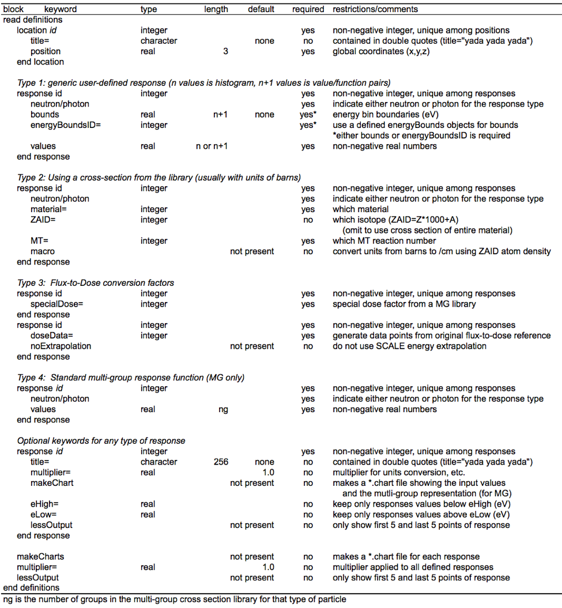
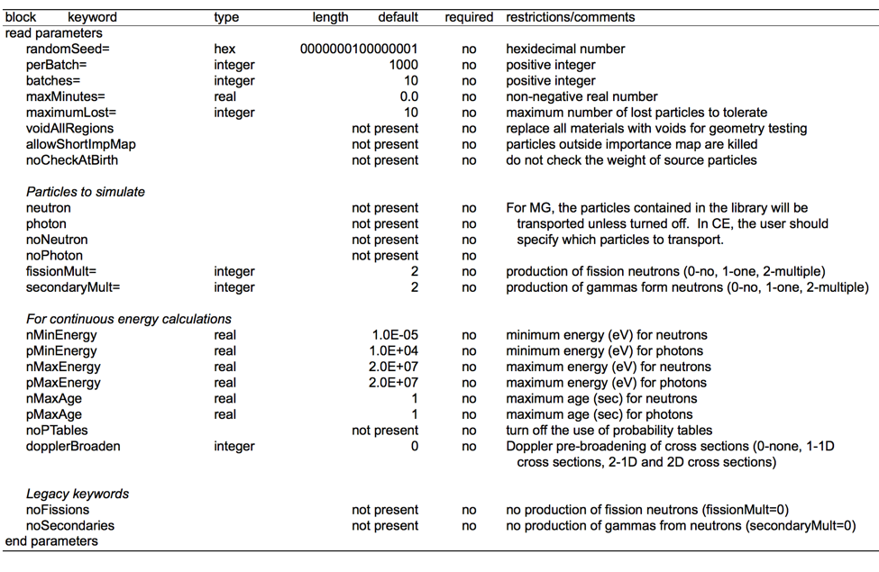

Monaco: A Fixed-Source Monte Carlo Transport Code for Shielding Applications¶
D. E. Peplow and C. Celik
Monaco is a general-purpose, fixed-source, Monte Carlo shielding code for the SCALE package. It is a functional module that uses either AMPX cross sections or continuous energy libraries to calculate neutron and photon fluxes and responses to specific geometry regions, to point detectors and to mesh tallies. Basic multigroup transport methods are inherited from Monaco’s predecessor, MORSE. Continuous energy physics has been incorporated into the code with a new physics package that uses the same CE data as CE-KENO-VI, with extensions for simulating photons. Variance reduction capabilities include source biasing and weight windows, either by geometry region or by using a mesh-based importance map. User input includes the cross section file unit number; the geometry description using the SCALE General Geometry Package; source description as a function of position, energy, and direction; tally descriptions (fluxes in which regions, at what point detectors, or over what mesh grids); and response functions (functions of energy). Output consists of tables detailing the region and point detector fluxes (and their responses), as well as files for mesh tallies.
Introduction¶
Monaco is a neutron/photon, fixed-source Monte Carlo shielding code for the SCALE code package. Monaco uses the SCALE General Geometry Package (SGGP)—the same geometry description as KENO-VI. Monaco has many options available to the user for specifying source distributions, many tally options, and many variance reduction capabilities. Monaco was originally based on the MORSE Monte Carlo code but has been extensively modified to modernize the coding, increase the number of capabilities in terms of sources and tallies, and allow for either multigroup or continuous energy (CE) transport through the use of the new SCALE CE Modular Physics Package (SCEMPP).
Monaco was developed to address a number of long-term goals for the Monte Carlo shielding capabilities in SCALE. The principal goals for this project included (1) unification of geometric descriptions between the SCALE shielding and criticality Monte Carlo codes, (2) implementation of a mesh-based importance map and mesh-based biased source distribution so that automated variance reduction could be used, and (3) establishment of a code using modern programming practices from which to continue future development. The addition of a continuous-energy transport capability is a significant change as well.
Monaco is the key component of the MAVRIC sequence, which also uses Denovo to create the mesh-based importance map and mesh-based biased source distribution for general 3-D automated variance reduction. See the MAVRIC chapter for more information.
Monaco Capabilities¶
Monaco has a wide range of source descriptions and tallies for performing general radiation transport calculations. Note that Monaco can work with either the AMPX-based multigroup libraries or the newer AMPX-based CE libraries. Note that for CE calculations, tallies still employ a multigroup energy structure to store and report results.
Source Descriptions¶
Multiple sources can be defined for a Monaco calculation. Sampling of the different sources can be biased by the user. Each source is specified by its spatial distribution, its energy distribution, its directional distribution, and its strength. Distributions defined by the user can also be biased and can be used multiple times by different sources. The Monaco tallies assume that the sources all have units of particles/second. If the source strengths are given in other units, the user will have to incorporate the proper conversion to the tally results and remember to interpret the results accordingly.
Distributions¶
Two types of basic distributions are used by Monaco – binned histograms and a set of value/function pairs. The binned histogram type is defined by \(n + 1\) bin boundaries and n values, representing the integrated amount in each bin. For the true distribution\(f(x)\), the bin boundaries \(\left\lbrack x_{0},\ x_{1},\ \ldots,\ x_{n} \right\rbrack\) and the integrated amounts \(F_{i} = \ \int_{x_{i - 1}}^{x_{i}}{f\left( x \right)\text{dx}}\) are given. The distribution will be normalized by Monaco after reading. The user can optionally bias a binned histogram distribution by supplying one of the following: the biased sampling distribution amounts, \(G_{i} = \ \int_{x_{i - 1}}^{x_{i}}{g\left( x \right)\text{dx}}\); the importance of each bin, \(I_{i}\); or the suggested weight for each bin, \(w_{i}\).
Based on what type of input is given, Monaco will compute a properly normalized probability distribution function for sampling. If the importances are given, the sampling distribution is computed as
If suggested weights are given, then the sampling distribution is computed as
for bins with non-zero weight. The sampling distribution for bins with a suggested weight of zero are set to \(G_{i} = \ 0\). When sampled, particles are assigned a weight of \(\frac{F_{i}}{G_{i}}\).
The second type of distribution that a user can define is for a series of point values of a function. For a set of \(n + 1\) point pairs, \(\left( x_{i},\ f_{i} \right)\) for \(i \in \left\lbrack 0\ldots n \right\rbrack\), defining \(n\) intervals, a distribution can be made by linearly interpolating between adjacent point pairs. This type of distribution can also be biased by supplying one of the following: the biased sampling distribution function value \(g_{i}\) at each point, the importance of each point, \(I_{i}\); or the suggested weight for each point, \(w_{i}\). Similar to above, if importances or weights are given, Monaco computes the biased distribution for sampling. For the value/function point pairs type of distribution, the weight assigned to the sampled particle is a continuous function.
Some commonly used distributions are built into Monaco and can be used by simple keywords. Monaco can produce a graph of any distribution so that the user can verify that the input was entered correctly.
Spatial energy and directional attributes¶
Each Monaco source is described by three separable components: spatial, energy and directional.
The spatial component of a source in Monaco is simple but very flexible. First, the general shape of the source region is defined in global coordinates. The basic solid shapes and their allowed degenerate cases are listed in Table 254. The user can reference any of the defined distributions to describe the source distribution in any coordinate (x, y, and z for cuboids, r and z for cylinders and r for spheres) to use for sampling or leave the source distribution as uniform over each dimension for the solid shape. The source region can be limited by the underlying SGGP geometry variables of unit, media, and mixture. This way, source volumes (or planes, lines, or points) can be defined that are independent or dependent on the model geometry. A cylinder or cylindrical shell region can be oriented with its axis in any direction.
Shape |
Allowable degenerate cases |
|---|---|
cuboid |
rectangular plane, line, point |
cylinder |
circular plane, line, point |
cylindrical shell |
cylinder, planar annulus, circular plane, cylindrical surface, line, ring, point |
sphere |
point |
spherical shell |
sphere, spherical surface, point |
Monaco samples the source position using either the given distributions or uniformly over the basic solid shape and then uses rejection if any of the optional SGGP geometry limiters have been specified. For sources that are confined to a particular unit, media, or mixture, users should make sure the basic solid shape tightly bounds the desired region for efficient sampling.
For the energy component of each source, either type of distribution described above can be used. Biasing can be used in the energy component of the source as well. The Watt spectrum is a built-in distribution which uses the Froehner and Spencer [FS81] method for sampling. If the defined energy distribution has point(s) that are out of the problem’s energy range for a CE problem, these points will be rejected in the source energy sampling and an error message will be generated. The warnings will be suppressed if the number of rejected source points exceeds a pre-defined threshold (1000).
Distributions can be used to define the directional component of the source. A function of the cosine of the polar angle, with respect to some reference direction in global coordinates, can be used by Monaco. If no directional distribution is specified, the default is an isotropic distribution (one directional bin from µ= −1 to µ=1). The default reference direction is the positive z-axis (<0,0,1>).
Monaco mesh source map files¶
An alternative to specifying the separate spatial and energy distributions, a Monaco mesh source file can be used. A mesh source consists of a 3D Cartesian mesh that overlay the geometry. Each mesh cell has some probability of emitting a source particle, and within each mesh cell, a different energy distribution can be sampled. Position within each mesh cell is sampled uniformly, and the emission direction is sampled from the standard directional distribution. Monaco mesh source files are typically produced by the MAVRIC sequence or by other Monaco calculations (see the mesh source saver option in the source input). For a source constructed from the separable spatial and energy distributions, Monaco can create a mesh source file which can then be visualized using the Mesh File Viewer. This is a convenient way to ensure that the source being used is what was intended.
Tallies¶
Monaco offers three tally types: point detectors, region tallies, and mesh tallies. Each is useful in determining quantities of interest in the simulation. Any number of each can be used, up to the limit of machine memory. The tallies will compute flux for each group, the total neutron and total photon fluxes, and any number of dose-like responses. A typical dose-like response, R, is the integral over energy of the product of a response function, \(f\left( E \right)\), and the flux, \(\phi\left( E \right)\).
(378)¶\[R = \int_{}^{}{f\left(E \right)\phi \left( E \right)\ } dE\]
In multigroup calculations, the total response would be expressed as the sum over all groups \(R = \sum_{}^{}{f_{g}\phi_{g}}\). For CE calculations, tallies can be segmented into energy and time bins which can be thought of as “groups”. All three of the tally types can be scaled with a constant – for example, to account for units conversions.
Tally statistics¶
The three Monaco tallies are really just collections of simple and extended tallies for each group, each total, and each group contribution to a response or total response. The simple tally works in the following way: a history score \(h_{i}\) is zeroed out at the start of history \(i\). During the course of the history, when an event occurs during substep \(j\), a score consisting of some contribution \(c_{\text{ij}}\) weighted by the current particle weight \(w_{\text{ij}}\) is calculated and added to \(h_{i}\). At the end of the history, the history score is the total weighted score for each substep \(j\) in the history.
(379)¶\[h_{i} = \sum_{j}^{}w_{\text{ij}}c_{\text{ij}}\]
Note that the values for the contribution \(c_{\text{ij}}\) and when it is added to the accumulator are determined by the tally type. At the end of the each history, the history score is added to two accumulators (power sums) - the first accumulator is for finding the tally average, \(S_{1}\), and the second accumulator is for finding the uncertainty in the tally average, \(S_{2}\).
At the end of all \(N\) histories, the second sample central moment is found from the power sums
(382)¶\[ m_{2} = \frac{S_{2}}{N} - \ \frac{S_{1}^{2}}{N^{2}}\]
and then the tally average is computed as \(\overline{x} = \frac{S_{1}}{N}\) and the uncertainty in the tally average is \(u = \sqrt{\frac{m_{2}}{N}}\).
The extended tally uses four accumulators – the first and second are the same as the simple tally – with the third and fourth accumulators used for finding the variance of the variance (VOV). These extra accumulators, \(S_{3}\) and \(S_{4}\), are calculated as
At the end of all \(N\) histories, the tally average \(\overline{x}\ \)and uncertainty in the tally average \(u\) are found in the same way as a simple tally. For the VOV calculation, the third and fourth sample central moments are found as
At the end of all \(N\) histories, the tally average \(\overline{x}\ \)and uncertainty in the tally average \(u\) are found in the same way as a simple tally. For the VOV calculation, the third and fourth sample central moments are found as
(385)¶\[m_{3} = \frac{S_{3}}{N} - \frac{3S_{1}S_{2}}{N^{2}} + \frac{2S_{1}^{3}}{N^{3}}\]
and then the VOV [PFB97] and figure-of-merit (FOM) are found using
where T is the calculation time (in minutes).
Extended tallies are used for the total neutron flux, total photon flux and any responses for the Monaco tallies. Simple tallies are used for each group’s flux and each group’s contribution to a response.
Detailed, group-wise results for each tally are saved to separate files at the end of each batch of particles. Users can view these files (in the SCALE temporary directory) as the Monaco simulation progresses. Summaries of the extended tallies appear in the final Monaco output file.
Statistical tests¶
Statistical tests are performed on the extended tallies at the end of each batch. Results for each batch are stored in files and the results for the final batch are shown in the main output tally summary. The six tests are:
Quantity |
Test |
Goal |
Within |
|
|---|---|---|---|---|
mean |
relative slope of linear fit |
= 0.00 |
±0.10 |
|
standard deviation |
exponent of power fit |
= -0.50 |
\[R^{2} > 0.99\]
|
|
relative uncertainty |
final value |
< 0.05 |
||
relative VOV |
exponent of power fit |
= -1.00 |
\[R^{2} > 0.95\]
|
|
relative VOV |
final value |
< 0.10 |
||
figure-of-m erit |
relative slope of linear fit |
= 0.00 |
±0.10 |
For the tests that are fit to a function with respect to batch (1, 2, 4, and 6), only the last half of the simulation is used. The basis for these tests is that in a well-behaved Monte Carlo, the mean should not increase or decrease as a function of the number of histories (\(N\)), the standard deviation should decrease with \(\frac{1}{\sqrt{N}}\), the variance of the variance should decrease with \(\frac{1}{N}\) and the figure-of-merit should neither
increase or decrease as a function of the number of histories (proportional to time). For tests 2 and 4, the coefficient of determination, \(R^{2}\), from a forced fit to a function with the right exponent is used as the tally test.
Point detector tallies¶
Point detectors are a form of variance reduction in computing the flux or response at a specific point. At the source emission site and at every interaction in the particle’s history, an estimate is made of the probability of the particle striking the position of the point detector. For each point detector, Monaco tallies the uncollided and total flux for each energy group, the total for all neutron groups, and the total for all photon groups. Any number of optional dose-like responses can be calculated as well.
Multigroup¶
After a source particle of group g is started, the distance R between the source position and the detector position is calculated. Along the line connecting the source and detector positions, the sum of the distance sj through each region j multiplied by the total cross section \(\Sigma_{j}^{g}\)for that region is also calculated. The contribution cg to the uncollided flux estimator is then made to the tally for group g.
Continuous Energy¶
After a source particle with energy E is started, the distance R between the source position and the detector position is calculated. For each bin \(g\) of the tally energy structure, a specific energy \(E_{g}\) is sampled uniformly within the bin. Along the line connecting the source and detector positions, the sum of the distance sj through each region j multiplied by the total cross section \(\Sigma_{j}\left( E_{g} \right)\) for that region. The contribution cg to the uncollided flux estimator is then made to the tally for group g. total cross section \(\Sigma_{j}\left( E \right)\) :
Only source particles contribute to the uncollided flux tally. At each interaction point during the life of the particle, similar contributions are made to each of the tallies. For each group g′ that the particle could scatter into and reach the detector location, a contribution is made that also includes the probability to scatter from the current direction towards the detector and having the energy change from group g to group g′.
This type of tally is costly, since ray-tracing through the geometry from the current particle position to the detector location is required many times over the particle history. Point detectors should be located in regions made of void material, so that contributions from interactions arbitrarily close to the point detector cannot overwhelm the total estimated flux (as \(\frac{1}{4\pi R^{2} \rightarrow \infty}\)).
Care must be taken in using point detectors in deep penetration problems to ensure that the entire phase space that could contribute has been well sampled—so that the point detector is not underestimating the flux by leaving out areas far from the source but close to the point detector position. One way to check this is by examining how the tally average and uncertainty change with each batch of particles used in the simulation. Large fluctuations in either quantity could indicate that the phase space is not being sampled well.
Region tallies¶
Region tallies are used for calculating the flux and/or responses over one of the regions listed in the SGGP geometry. Both the track-length estimate of the flux and the collision density estimate of the flux are calculated—and for each, the region tally contains simple tallies for finding flux in each group, the total neutron flux, and the total photon flux. For each of the optional response functions, the region tally also contains simple tallies for each group and the total response.
For the track-length estimate of flux, each time a particle of energy \(E\) moves through the region of interest, a contribution of \(l\) (the length of the step in the region) is made to the history score for the simple tally for flux for tally group g. The same contribution is made for the history score for the simple tally for total particle flux, neutron or photon, depending on the particle type.
If any optional response functions were requested with the tally, then the contribution of \(\text{lf}\left( E \right)\)is made for the response group, where \(f\left( E \right)\) is the response function value for energy \(E\). The history score for the total response function is also incremented using \(\text{lf}\left( E \right)\).
At the end of all of the histories, the averages and uncertainties of all of the simple tallies for fluxes are found for every group and each total. These results then represent the average track-length over the region. To determine flux, these results are divided by the volume of the region. If the volume \(V\) of the region was not given in the geometry input nor calculated by Monaco, then the tally results will be just the average track lengths and their uncertainties. A reminder message is written to the tally detail file if the volume of the region was not set.
For the collision density estimate of the flux, each time a particle of energy \(E\) has a collision in the region of interest, a contribution of \(\frac{1}{\Sigma}\) (the reciprocal of the total macroscopic cross section) is made to the history scores for the simple tally for flux for tally energy group g and for the total particle flux. At the end of the simulation, the averages and uncertainties of all of the simple tallies for every group flux and total flux are found and then divided by the region volume, if available.
Similar to the point detector tallies, region tallies produce a file listing the tally average and uncertainty at the end of each batch of source particles (a *.chart file). This file can be plotted using the simple 2-D plotter (ChartPlot) to observe the tally convergence behavior.
Mesh tallies¶
For a D Cartesian mesh or a cylindrical mesh (independent of the SGGP geometry), Monaco can calculate the track-length estimate of the flux. Since the number of cells (voxels) in a mesh can become quite large, the mesh tallies are not updated at the end of each history but are instead updated at the end of each batch of particles. This prevents the mesh tally accumulation from taking too much time but means that the estimate of the statistical uncertainty is slightly low.
Like the other tallies, mesh tallies can calculate optional response functions.
Since a mesh tally consists of many actual tallies, the statistical tests are a bit more complex than for the region and point detector tallies. Several statistical quantities and tests are used in Monaco similar to those in several recent studies [KS11][KI11] which look at a distribution of relative variances over the mesh tally. In Monaco, the basis of the statistical tests center on the distribution of relative uncertainties and its mean, \(\overline{r}\), of the voxels (\(V\)) with score.
where \(R_{i}\) is the relative uncertainty of the flux or dose in voxel \(i\). If every voxel has been sampled well and its relative uncertainty \(R_{i} \propto \frac{1}{\sqrt{N}}\), then the mean relative uncertainty of the voxels should also behave as \(\frac{1}{\sqrt{N}}\). The variance of the mean relative uncertainty can be calculated and a figure of merit (FOM) for the mesh tally can be constructed using
with the time\(\text{\ T}\) in minutes. The four tests measure over the simulation: 1) if \(\zeta\), the fraction of voxels with non-zero score, is constant; 2) if the mean relative uncertainty is decreasing as \(\frac{1}{\sqrt{N}}\) (as measured by the coefficient of determination, \(R^{2}\), of a fit to a curve with power of -0.5); 3) if the variance of the mean relative uncertainty is decreasing with \(\frac{1}{N}\); and 4) if the FOM is constant.
Quantity |
Test |
Goal |
Within |
|
|---|---|---|---|---|
\(\zeta\), fraction with score |
relative slope of linear fit |
= 0.00 |
±0.10 |
|
\(\overline{r}\), mean relative uncertainty |
exponent of power fit |
= -0.50 |
\[R^{2} > 0.99\]
|
|
variance of \(\overline{r}\) |
exponent of power fit |
= -1.00 |
\[R^{2} > 0.95\]
|
|
figure-of-merit |
exponent of power fit |
= 0.00 |
±0.10 |
For non-uniform meshes (especially cylindrical), these tests may not be the best measure of performance since different size voxels will have a wider variety of relative uncertainties. The user is also cautioned that if there are individual voxels within the mesh tally that have relative uncertainties that are not decreasing as \(\frac{1}{\sqrt{N}}\), then the mesh tally statistical tests will not be meaningful. It is ultimately up to the user to decide if the mesh tally is performing well (is the goal of the mesh tally just to calculate dose, not flux?; are all spatial areas of the mesh tally equally important?; are all magnitudes of the flux or response values equally important?; etc.)
Mesh tallies can be viewed with the Mesh File Viewer, a Java utility that can be run from GeeWiz (on PC systems) or can be run separately (on any system). The Mesh File Viewer will show the flux for each group, the total flux for each type of particle and the optional responses. Uncertainties and relative uncertainties can also be shown for mesh tallies using the Mesh File Viewer. For more information on the Mesh File Viewer, see its on-line documentation.
Continuous Energy Transport¶
Using multigroup data in Monte Carlo transport calculations is generally sufficient for most problems (both shielding and criticality). Many of the reaction cross sections vary slowly with energy, so energy “groups” can be made with one set of properties for the group. Multigroup treatments can further simplify radiation transport by combining the different types of reactions that can occur into a simple scattering matrix – particles then have certain probabilities to scatter from their current energy group to another energy group. If the user is not interested in knowing which specific type of interaction happened at each collision, this simplification can increase calculation efficiency.
One major drawback of the multigroup approach is in representing discrete gammas, such as the decay radiation from common isotopic sources. Consider a simple shielding simulation using cobalt-60. This isotope gives off two high-energy gamma rays when it decays (1173230 eV with intensity 99.85% and 1332490 eV with intensity 99.9826%). In the SCALE multigroup calculations, a cobalt-60 source spectrum is represented by a broad pdf, controlled by the group structure. This is shown in Fig. 191. for the fine 47-group structure and the broad 19-group structure.
{kind=link}
Note that in both group structures, 1.33 MeV is a group boundary, so the 1332490 eV line is represented by group that covers higher energies. The cross section for that group is lower than the cross section for the specific line, so multigroup transport calculations will tend to overestimate the number of photons penetrating a shield, which will overestimate dose rates.
Using CE and the two multigroup libraries, the total cross sections for the cobalt lines are listed in Table 255. Fig. 192. shows the total cross section of photons in tungsten, in both CE and the two SCALE multigroup structures. On the whole, the multigroup data represents the CE data well. Fig. 193. shows the same cross section information near the two cobalt lines, which shows how the multigroup cross sections average over quite large energy ranges.
1173230 eV |
1332490 eV |
|
|---|---|---|
SCALE CE |
1.03353 |
0.94864 |
SCALE 47 |
1.09066 |
0.92743 |
SCALE 19 |
1.05167 |
0.89289 |
The small differences in cross section can make large differences in the transport. Consider just 5 cm of tungsten. Using the cross sections in Table 255, the attenuation (\(e^{- \mu x}\)) of either line can vary by 30%.
In addition to source representation problems, multigroup transport is not adequate for applications where line spectra are measured. Because of the group structure, tally results will be averaged out within a group. With the fixed boundaries, specific lines in the tallies will not be able to be seen. For examples, in the 19-group library, there is no group around the 511 keV annihilation gammas – they are averaged in with other photons from 400 to 600 keV. No multigroup structure could contain thin groups around every line of interest.
{kind=link}
Fig. 192 Photon total cross section in tungsten. The energies of the cobalt-60 are displayed as lines at 1173230 and 1332490 eV.¶
{kind=link}
Fig. 193 Photon total cross section in tungsten, near the cobalt lines. The energies of the cobalt-60 are displayed as lines at 1173230 and 1332490 eV.¶
A sample problem involving a cobalt source and a slab of tungsten will compare the use of continuous-energy transport to multigroup transport, to demonstrate the large difference in results for single-line sources. For distributions, differences between multigroup and continuous-energy may not be very significant.
Monaco Input Files¶
The input file for Monaco consists of two lines of text (“=monaco” command line and one for the problem title) and then several blocks, with each block starting with “read xxxx” and ending with “end xxxx”. There are three blocks that are required and seven blocks that are optional. The cross section and geometry blocks must be listed first and in the specified order. Other blocks may be listed in any order.
Blocks (must be in this order):
Cross Sections – (required) lists the cross-section file and the mixing table information
Geometry – (required) SCALE general geometry description
Array – optional addition to the above geometry description
Volume – optional calculation or listing of region volumes
Plot – create 2D slices of the SGGP geometry
Other Blocks (any order, following the blocks listed above):
Definitions – defines locations, response functions, grid geometries, cylindrical mesh geometries, energy bin boundaries, time bin boundaries and various distributions used by other blocks
Source – (required) description of multiple sources; with the spatial, energy, and directional distributions and particle type for each
Tallies – description of what to calculate: point detector tallies, region tallies, or mesh tallies
Parameters – how to perform the simulation (random number seed, how many histories, etc.)
Biasing – data for reducing the variance of the simulation
The physical model blocks (Geometry, Array, Volume and Plot) follow the standard SCALE format. See the other SCALE references as noted in the following sections for details.
For the other six blocks, scalar variables are set by “keyword=value”, fixed length arrays are set with “keyword value1 … valueN”, variable length arrays are set with “keyword value1 … valueN end”, and some text and filenames are read in as quoted strings. Single keywords to set options are also used in some instances. The indention, comment lines, and upper/lower case shown in this document are not required—they are used in the examples only for clarity. Except for strings in quotes (like filenames), SCALE is not case sensitive.
After all of the blocks are listed, a single line with “end data” should be listed. A final “end” should also be listed, to signify the end of all Monaco input. See Table 256 for an overview of the Monaco input file structure.
Cross sections block¶
Monaco does its own mixing, so it needs a mixing table. For each element of each mixture, an identifier and a number density must be supplied. These can be found in the output of whatever sequence was used to make the cross-section file, such as CSAS-MG. Two coupled neutron/photon multigroup libraries were created specifically for shielding problems from ENDF/B-VII.0 data—the v7-200n47g fine-group and the v7-27n19g coarse-group libraries. CE libraries made from ENDF/BVII.0 are also available in SCALE.
|
|
=monaco
Some title for this problem
read crossSections
...
end crossSections
read geometry
...
end geometry
read array
...
end array
read volume
...
end volume
read plot
...
end plot
read definitions
...
end definitions
read sources
...
end sources
read tallies
...
end tallies
read parameters
...
end parameters
read biasing
...
end biasing
end data
end
|
name of sequence
title
List of isotopes/mixtures
[required block]
SCALE SGGP geometry
[required block]
SCALE SGGP arrays
[optional block]
SCALE SGGP volume calc
[optional block]
SGGP Plots
[optional block]
Definitions
[possibly required]
Sources definition
[required block]
Tally specifications
[optional block]
Monte Carlo parameters
[optional block]
Biasing information
[optional block]
end of all blocks
end of Monaco input
|
For example, if CSAS-MG was used to produce an AMPX file using the following input,
=csas-mg
Demonstration problem, three mixtures
v7-200n47g
read composition
uo2 1 0.2 293.0 92234 0.0055 92235 3.5 92238 96.4945 end
ss304 2 1.0 293.0 end
h2o 4 1.0 293.0 end
end composition
end
in addition to creating an AMPX file, the output would include a tables similar to
m i x i n g t a b l e (THREAD = 00 )
entry mixture isotope number density new identifier explicit temperature
1 1 92234 2.73451E-07 92234 293.0
2 1 92235 1.73272E-04 92235 293.0
3 1 92238 4.71674E-03 92238 293.0
4 1 8016 9.78057E-03 8016 293.0
m i x i n g t a b l e (THREAD = 00 )
entry mixture isotope number density new identifier explicit temperature
1 2 6000 3.18488E-04 6000 293.0
2 2 14028 1.57010E-03 14028 293.0
3 2 14029 7.97625E-05 14029 293.0
4 2 14030 5.26416E-05 14030 293.0
5 2 15031 6.94688E-05 15031 293.0
6 2 24050 7.59178E-04 24050 293.0
7 2 24052 1.46400E-02 24052 293.0
8 2 24053 1.66006E-03 24053 293.0
9 2 24054 4.13224E-04 24054 293.0
10 2 25055 1.74072E-03 25055 293.0
11 2 26054 3.42190E-03 26054 293.0
12 2 26056 5.37166E-02 26056 293.0
13 2 26057 1.24055E-03 26057 293.0
14 2 26058 1.65094E-04 26058 293.0
15 2 28058 5.26873E-03 28058 293.0
16 2 28060 2.02951E-03 28060 293.0
17 2 28061 8.82212E-05 28061 293.0
18 2 28062 2.81288E-04 28062 293.0
19 2 28064 7.16357E-05 28064 293.0
m i x i n g t a b l e (THREAD = 00 )
entry mixture isotope number density new identifier explicit temperature
1 4 1001 6.67531E-02 1001 293.0
2 4 8016 3.33765E-02 8016 293.0
which can be used to construct the Monaco cross-section block mixing table.
read crossSections
ampxFileUnit=4
mixture 1
element 92234 2.73451E-07
element 92235 1.73272E-04
element 92238 4.71674E-03
element 8016 9.78057E-03
end mixture
mixture 2
element 6000 3.18488E-04
element 14028 1.57010E-03
element 14029 7.97625E-05
element 14030 5.26416E-05
element 15031 6.94688E-05
element 24050 7.59178E-04
element 24052 1.46400E-02
element 24053 1.66006E-03
element 24054 4.13224E-04
element 25055 1.74072E-03
element 26054 3.42190E-03
element 26056 5.37166E-02
element 26057 1.24055E-03
element 26058 1.65094E-04
element 28058 5.26873E-03
element 28060 2.02951E-03
element 28061 8.82212E-05
element 28062 2.81288E-04
element 28064 7.16357E-05
end mixture
mixture 4
element 1001 6.67531E-02
element 8016 3.33765E-02
end mixture
end crossSections
For a CE calculation, instead of the keyword “ampxFileUnit=” (which refers to a given AMPX library), the keyword “ceLibrary=” should be used with a CE library name, enclosed in quotes. Also for CE, a default temperature can be set before any mixtures are defined using the “ceTempDefault=” temperature (in Kelvins). With each mixture, a specific temperature can be set using “temperature.”
Other keywords that can be used in the cross-section block for multigroup problems include flags to turn on printing of different aspects of the cross-section mixing process (“printTotals”, “printScatters”, “printAngleProb”, “printFissionChi”, “printExtra”, and “printLegendre”). The keyword “fullyCoupled” can be used to specify all groups to be treated as primary groups. These keywords do not work in CE problems since the point wise data contain an enormous number of points.
Users are encouraged to use Monaco by running the MAVRIC sequence, which creates the cross-section mixing table automatically, for both multigroup and CE calculations.
Geometry block¶
The geometry input uses the standard SGGP, similar to KENO-VI. Input instructions can be found in Geometry Data in the KENO-VI chapter of the SCALE manual.
Shielding calculations (Monaco, MAVRIC, SAS4) differ from their criticality cousins (KENO V.a, KENO-VI) in a very special way—sources and detectors can be located outside of the materials where the transport takes place. To accommodate this fact in Monaco and MAVRIC, make sure that a void region (a media record using mixture 0) surrounds the source area and any point detectors, if they are not located in a region of the actual geometry.
For example, if the objective is to calculate the effectiveness of a simple slab shield, the model geometry would consist of just one slab of material. The source would be on one side of the slab, and a detector would be on the other side of the slab. In Monaco (and the MAVRIC sequence), the input should list at least two regions: (1) the slab itself and (2) a void region outside of the slab containing both the source and detector positions.
Monaco tracks particles through the SGGP geometry as well as other geometries used for mesh tallies or mesh importance maps. Because Monaco must track through all of these geometries at the same time, users should not use the reflective boundary capability in the SGGP geometry.
The graphical user interfaces GeeWiz and Keno3D can be used on Windows platforms to develop and view the geometry.
Array, volume, and plot blocks¶
Geometry array input uses the standard SGGP, similar to KENO-VI. Input instructions can be found in KENO-VI chapter on Array Data of the SCALE manual.
Volumes of various geometry regions are used to calculate fluxes for those regions. Volumes can be input as part of the geometry input block above, or calculated by the SGGP using one of two different methods. See KENO-VI chapter on Volume Data for instructions.
The “read plot” block allows users to create a 2-D character or color plots of slices through a specified portion of the 3-D geometrical representation of the problem. These images can be saved as *.png files. For more information, see the KENO-VI chapter on Plot Data.
Definitions block¶
The definitions block defines different types of data (locations, detector response functions, grid geometries, cylindrical geometries, distributions, energy bin boundaries and time bin boundaries) that are used by some of the other blocks in Monaco. Individual data can be listed in any order. Identification numbers must be positive integers and unique within that type of data. Each type of data begins with a keyword and ends with an “end” and that same keyword. All of the different data types can have an optional title using the keyword “title=”.
read definitions
location 43
…
end location
response 45
…
end response
distribution 1
…
end distribution
response 12
…
end response
end definitions
Locations¶
Locations (“location”) require an identification number and the physical position in global coordinates using the “position” keyword (a fixed length array). A position is specified by listing its x, y, and z coordinates.
location 1
title="Radial detector - close to surface"
position 162.0 0.0 0.0
end location
location 2 position 0.0 0.0 295.6 end location
location 3
title=”Corner detector”
position 162.0 0.0 295.6
end location
location 105 position 0.0 0.0 385.6 end location
location 106 position 252.0 0.0 385.6 end location
Response functions¶
Response functions (“response”) require an identification number and information on how to build an energy dependent response function. There are three basic types of responses: 1) the general user-defined response, 2) a response based on cross-section data, and 3) a response based on a specific flux-to-dose conversion factor. For multigroup calculations, a fourth type of a response simply listing multigroup values is also available. Responses must be defined as either a neutron response or a photon response.
- Type 1.
A general user-defined response function can be either a binned histogram function (n+1 energies and n values) or a set of value/function pairs that will be linearly interpolated (n+1 energies and n+1 values). The energies (in eV) are set using the “bounds … end” keyword. The response values are entered with the “values … end” keyword. The energies can be entered from low energy to high energy order or the traditional high energy to low energy order but must be monotonic. The values array of the response is interpreted to correspond to the order of the bounds array. These two examples
response 11 title="user-defined response, histogram" neutron bounds 1e7 8e6 6e6 4e6 2e6 1e5 end values 1.0 0.8 0.6 0.4 0.2 end end response response 12 title="user-defined response, value/function pairs" photon bounds 1e5 2e6 4e6 6e6 8e6 1e7 end values 0.01 0.2 0.4 0.6 0.8 1.0 end end responseare shown in Fig. 194 and Fig. 195.

Fig. 194 Histogram-type response.¶
- Type 2.
Data from the cross-section library can also be used to define a response, for example in finding reaction rates. For the cross section (with units of barns) for a single isotope, the user specifies a material/ZAID/MT combination. The keyword “macro” can be used to multiply the cross section by the atom density of the ZAID in the material (which converts the units of the response from barns to /cm). Users can also specify just the material and MT numbers, to produce the macroscopic cross section of reaction MT for the entire material (with units of /cm). A partial list of common MT numbers is shown in Table F23.3.2 (the full list is in XSECLIB M04, Appendix B). To match some other sequences in SCALE, users can also use text strings to specify the ZAID and MT by using keywords “nuclide=” (for example, nuclide=U-235) and “reaction=” (for example reaction=fission). If the user requested a microscopic cross section response for a reaction in a CE problem, the response will be generated for the nuclide from the AMPX CE libraries even if the nuclide itself is not included in any of the material definitions in the problem. Available reaction lists depend on the nuclide and the list will be printed as a warning message in the output if a non-existing reaction is requested.
read composition uo2 7 1.0 293.0 end end composition … read definitions response 41 title=”get the microscopic (b) for 235” neutron material=7 ZAID=92235 MT=18 end response response 43 title=”get the macroscopic (/cm) for 235” neutron material=7 ZAID=92235 MT=18 macro end response response 45 title=”get the macroscopic (/cm) for UO_2 (234, 235, 238)” neutron material=7 MT=18 end response end definitionsFor the examples above, response 41 is shown in Fig. 196. and Fig. 197. for both MULTIGROUP and CE.
Table 257 Common MT (reaction) numbers for responses¶
{kind=link}
{kind=link}
{kind=link}
- Type 3.
Flux-to-dose conversion factors are a little different in multigroup and continuous-energy implementations. The AMPX multigroup shielding libraries contain neutron and photon dose responses from several sources. These have been processed by the AMPX system (the jergens module). To form the multigroup values for the libraries, the original data was extrapolated to cover the entire energy range of the shielding libraries and was then collapsed into the group structures using a weighting spectrum. These dose responses can be accessed through Monaco/MAVRIC by defining a response object that uses the keyword “specialDose=” and then providing the MT number of the particular response. The dose responses available in the shielding libraries in are shown in Table 258. Note that the coupled responses in SCALE 6.1 are no longer used by Monaco, since responses are now defined to be either a neutron response or a photon response. When using the “specialDose=” keyword, the “neutron” or “photon” designation is ignored, since the particle type is inherent with the MT number.
read definitions response 1 specialDose=9031 end response end definitions
Table 258 Flux-to-Dose conversion factor MT numbers¶ The standard flux-to-dose conversion factors have not been made part of the continuous-energy libraries. Routines have been added to the Monaco code base to generate data points to allow users to define responses based on the original references. Note that the responses in these references were defined over different energy ranges, as shown in Table 259.
Table 259 Energy ranges of the original Flux-to-Dose responses¶ The keyword “doseData=” can be used to create a response using the original, point-wise data (except for Claiborne-Trubey where the original data is a histogram). Data points are also extrapolated to cover the energy range of 10-5 to 2×107 eV for neutrons and up to 20 MeV for photons. (The optional keyword “noExtrapolation” can be used to get just the original data without the extrapolations.) The final response is formed by interpolating (lin-lin) between these points. For multigroup problems, these keywords will collapse the original data (with or without extrapolation) into a multigroup structure but without the weighting function used to create the dose factors in the multigroup libraries. This will not match the multigroup responses in the those libraries.
read definitions response 1 doseData=9031 end response response 1 doseData=9031 noExtrapolation end response end definitions
As an example of the various forms of a flux-to-dose conversion factor, the ANSI 1991 values (MT=9031 and 9505) are shown in Fig. 198 through Fig. 201.
The use of the “specialDose=” and “doseData=” keywords is summarized in Table 260. Users should understand that the only way to get the ‘true’ response described in the original references is to use the “doseData=” and “noExtrapolation” keywords. The traditional approach in SCALE has been to extrapolate the original data over the entire energy range of the problem, yielding higher dose rates than the ‘true’ response would.
Table 260 Use of the “specialDose=” and “doseData=” keywords.¶ - Type 4.
For multigroup calculations, since the energy structure is already known, a response can be defined by listing just the values for each group using the keyword “values … end”. The array length of this type of response should match the number of energy groups for that particle type in the cross-section library. Values should be entered in the standard multigroup order – from high energy to low energy. The shortcut keyword “unity” places a value of 1.0 as the response for each group.
response 19 title="Total Photon Dose at Each Detector Point Location (ANSI 9504)" photon values 1.16200E-05 8.74457E-06 7.45967E-06 6.35058E-06 5.39949E-06 4.60165E-06 3.95227E-06 3.45885E-06 3.01309E-06 2.62001E-06 2.19445E-06 1.82696E-06 1.51490E-06 1.15954E-06 8.70450E-07 6.21874E-07 3.70808E-07 2.68778E-07 5.93272E-07 end end response response 4 title=”total photon flux above 1 MeV, photons/(/cm2/sec)” photon values 11r1.0 8r0.0 end end response response 99 title=”put a 1 in every group” neutron unity end response
The different response types all share some optional keywords. The keyword “makeChart” can be used to produce a *.chart file (called ‘outputName.respid.chart’) so that the response can be plotted with the ChartPlot 2D plotter. To create files for every response, use the keyword “makeCharts” inside the definitions block but outside any particular response definition. The keyword “multiplier=” can be used with any type of response, which is useful for things such as units conversions. Multiple uses of the “multiplier=” keyword within one response definition will apply the product of all multipliers to that response. Using the keyword “multiplier=” in the definitions block but outside any particular response will apply that multiplier to all responses. Keywords “eHigh=” and “eLow=” can be used to only keep the response values in a range between eHigh and eLow (both in eV). The keyword “lessOutput” can be used to suppress response data echoing in the output file and minimize output file size particularly for CE responses that can have fine point-wise data. It will cause to print only the first five and the last five points of the data if the number of bins is greater than twenty for binned histogram and value/function pairs type of responses.
The original flux-to-dose conversion factor references that were incorporated into Monaco are:
ANSI/ANS-6.1.1-1977 (N666) “American National Standard Neutron and Gamma-Ray Flux-to-Dose-Rate Factors,” Prepared by the American Nuclear Society Standards Committee Working Group ANS-6.1.1, Published by the American Nuclear Society, 555 North Kensington Avenue LaGrange Park, Illinois 60525, Approved March 17, 1977 by the American National Standards Institute, Inc.
ANSI/ANS·6.1.1-1991, “American National Standard for Neutron and Gamma-Ray Fluence-to-Dose Factors,” Prepared by the American Nuclear Society Standards Committee Working Group ANS-6.1.1, Published by the American Nuclear Society, 555 North Kensington Avenue LaGrange Park, Illinois 60525 USA, Approved August 26, 1991 by the American National Standards Institute, Inc.
H. C. Claiborne and D. K. Trubey, “Dose Rates in a Slab Phantom from Monoenergetic Gamma Rays,” Nuclear Applications & Technology, Vol. 8, May 1970.
B. J. Henderson, “Conversion of Neutron or Gamma Ray Flux to Absorbed Dose Rate,” ORNL Report No. XDC-59-8-179, August 14, 1959.
International Commission of Radiation Units and Measurements, ICRU Report 44: Tissue Substitutes in Radiation Dosimetry and Measurement, Bethesda, MD, 1989.
International Commission of Radiation Units and Measurements, ICRU Report 57: Conversion Coefficients for use in Radiological Protection Against External Radiation, Bethesda, MD, August 1, 1998.
{kind=link}
{kind=link}
{kind=link}
{kind=link}
Grid geometries¶
Grid geometries (“gridGeometry”) require an identification number and then a description of a 3‑D rectangular mesh by specifying the bounding planes of the cells in each of the x, y, and z dimensions. The keyword “xplanes … end” can be used to list plane values (in any order). The keyword “xLinear n a b” can be used to specify n cells between a and b. The keywords “xplanes” and “xLinear” can be used together and multiple times – they will simply add planes to any already defined for that dimension. Any duplicate planes will be removed. Similar keywords are used for the y- and z-dimensions.
gridGeometry 3
title="Boring uniform grid"
xLinear 10 -100 100
yLinear 10 -100 100
zLinear 10 -100 100
end gridGeometry
gridGeometry 2
xplanes -100.0 -90.0 -99.0 -95.0 end
xLinear 9 -90.0 0.0
xLinear 18 0.0 90.0
xplanes 95.0 100.0 99.0 end
yLinear 20 100.0 -100.0
zLinear 40 100.0 -100.0
end gridGeometry
When using multiple instances of the keyword *Linear and *planes for a given dimension, duplicates should be removed from the final list. In some cases, double precision math will leave two planes that are nearly identical but not removed (for example: 6.0 and 5.9999999). To prevent this, a default tolerance is set to remove planes that are within 10-6 cm of each other. The user is free to change this by using the keyword “tolerance=” and specifying something else. Note that the tolerance can be reset to a different value in between each use of *Linear or *planes.
The keyword “make3dmap” for a particular grid geometry definition will create a file called ‘outputName.gridid.3dmap’ which can be visualized using the Java Mesh File Viewer. Using the keyword “make3dmaps” in the definitions block but outside any particular gridGeometry definition will create a geometry file for each gridGeometry defined.
Cylindrical mesh geometries¶
Cylindrical geometries (“cylGeometry”) require an identification number and then a description of a 3‑D cylindrical mesh by specifying the bounding planes of the cells in each of the r, θ, and z dimensions. The keywords “radii … end”, “thetas … end”, and “zplanes … end” can be used to list the plane values in any order. The keywords “radiusLinear n a b”, “thetaLinear n a b”, and “zLinear n a b” can be used to specify n cells between a and b. Note that the keywords “thetas” and “thetaLinear” expect values between 0 and 2π. For entering values between 0 and 360°, use the keywords “degrees” and “degreeLinear” instead. The keywords for each dimension can be used together and multiple times – they will simply add planes to any already defined for that dimension. Any duplicate planes will be removed.
Cylindrical meshes are oriented along the positive z-axis by default. To change this, the user can specify the axis of the cylinder using the keyword “zaxis u v w” and specify the perpendicular direction where θ =0 using “xaxis u v w”. To change the base position of the cylinder, use the keyword “position x y z”. Some examples of cylindrical mesh geometries include:
cylGeometry 12
radiusLinear 20 100.0 168.0
radiusLinear 10 168.0 368.0
degreeLinear 12 0 360
zLinear 25 255.2 -255.2
zPlanes -45.0 -40. -35.0 end
end cylGeometry
cylGeometry 13
title="degenerate: only one angular bin"
radiusLinear 10 168.0 368.0
thetaLinear 1 0.0 6.2831853
zLinear 25 255.2 -255.2
end cylGeometry
cylGeometry 14
title="degenerate: emulate surface tally over partial angle range"
radiusLinear 1 367.5 368.5
degreeLinear 1 45 135
zLinear 25 255.2 -255.2
zaxis 0 0 1
xaxis 0 -1 0
end cylGeometry
Similar to the grid geometries, the user can use the keyword “tolerance=” to specify how close duplicate planes can be when being considered for removal. The keyword “makeCylMap” for a particular cylindrical geometry definition will create a file called ‘outputName.cylid.3dmap’ which can be visualized using the Java Mesh File Viewer. Using the keyword “makeCylMaps” in the definitions block but outside any particular gridGeometry definition will create a geometry file for each gridGeometry defined. The Mesh File Viewer is written for rectilinear geometries and will not display circles. The only view that works in the Mesh File Viewer for cylindrical meshes is the x-z view, which will correctly show an r-z slice. The slider (marked “y”) will control which θ value to display (from 0 to 2π).
Cylindrical meshes can only be used for tallies. They cannot be used for making mesh sources or for any importance calculations in MAVRIC.
Distributions¶
Distributions (“distribution”) require an identification number and several other keywords depending on the type of distribution. For a binned histogram distribution over n intervals, the keyword “abscissa … end” is used to list the \(n + 1\) bin boundaries and the keyword “truePDF … end” is used to list the \(n\) values of the pdf integrated over those bins. For a pdf defined using a series of evaluated points over \(n\) intervals, use the keywords “abscissa … end” and “truePDF … end” listing the \(n + 1\) values for each. The “truePDF” values should be the value of the pdf evaluated at the corresponding point in the abscissa array. The abscissa array should either be in increasing order or decreasing order – monotonic either way – with the truePDF array ordered accordingly.
For either the binned histogram or the value/function point pairs distributions, biasing can also be specified for a given distribution using the “biasedPDF … end” keyword, the “weight … end” keyword, or the “importance … end” keyword, with a length that matches the truePDF array. Weights specify the suggested sampling weights for particles and importances specify the suggested importance. For biasing, the user only needs to specify just one of “biasedPDF”, “weight” or “importance”. The other arrays will be computed by Monaco.
For discrete distributions (such as gamma line sources), use the keyword “discrete … end” to list the discrete abscissa values and use the keyword “truePDF … end” to list the probabilities. The “biasedPDF … end”, “trueCDF … end”, and “biasedCDF … end” keywords can also be used. Each array should have the same length – the number of discrete lines.
To visualize a distribution, add the keyword “runSampleTest” and a *.chart file will be produced showing the true pdf, the pdf used for sampling (the biased pdf) and the results of a sampling test using 106 samples. The file will be named using the output name of the SCALE job and the distribution identification number ‘outputName.distid.chart’ and can be viewed with the ChartPlot 2D Interactive Plotter. To perform a sampling test and create a *.chart file for all of the distributions in the definitions block, use the keyword “runSampleTests” inside the definitions block but outside any particular distribution.
Some example distribution inputs are listed below and shown in Fig. 202.
distribution 11
title="a binned histogram"
abscissa -5 -4 -3 -2 -1 0 1 2 3 4 5 end
truePDF 1 2 3 4 5 4 3 2 2 2 end
end distribution
distribution 12
title="value/function pairs"
abscissa -5 -4 -3 -2 -1 0 1 2 3 4 5 end
truePDF 0 1 2 3 4 5 4 3 2 2 2 end
end distribution
distribution 21
title="a binned histogram with biasing"
abscissa -5 -4 -3 -2 -1 0 1 2 3 4 5 end
truePDF 1 2 3 4 5 4 3 2 2 2 end
biasedPDF 3 2 1 1 1 1 1 2 2 2 end
end distribution
distribution 22
title="value/function pairs with importances"
abscissa -5 -4 -3 -2 -1 0 1 2 3 4 5 end
truePDF 0 1 2 3 4 5 4 3 2 2 2 end
importance 4 3 2 1 1 1 1 1 2 2 2 end
end distribution
distribution 31
title="a binned histogram using CDF's"
abscissa -5 -4 -3 -2 -1 0 1 2 3 4 5 end
trueCDF 1 3 6 10 15 19 22 24 26 28 end
end distribution
distribution 32
title="a binned histogram with biasing using CDF's"
abscissa -5 -4 -3 -2 -1 0 1 2 3 4 5 end
trueCDF 1 3 6 10 15 19 22 24 26 28 end
biasedPDF 3 5 6 7 8 9 10 12 14 16 end
end distribution
Other notes on distributions:
Binned histogram distributions can also be specified using cdf’s (keywords “trueCDF” and “biasedCDF”).
For distributions that will be used for source energy sampling, use abscissa values of eV.
For multigroup calculations using histograms, the keywords “neutronGroups” or “photonGroups” can be used instead of specifying the abscissa values. In this case, be sure to list the binned pdf values in order from the highest energy group to the lowest energy group.
For CE calculations, instead of specifying abscissa values, the bin boundaries of an energyBounds object (see next section) can be specified using “energyBoundsID=”.
{kind=link}
Several special (built-in) distributions are available in Monaco. To use one of these, specify the keyword “special=” with a distribution name in quotes and the keyword “parameters … end” (if required) for that type of distribution. These special distributions are summarized in Table 8.2.8.
The Watt spectrum has the form
with the parameters a and b (with c as a normalization constant). For spontaneous fission of 252Cf, values typically used are a=1.025 MeV and b=2.926/MeV. For thermal fission of 235U, the parameters are a=1.028 MeV and b=2.249/MeV. For induced fission, the parameters a and b are, in general, functions of incident neutron energy. See Table 8.2.9 for an example. The Watt spectrum distribution will be displayed in the *.chart plot as a histogram distribution using the cross-section energy structure neutron groups but when sampled in Monaco, the continuous Froehner and Spencer1 method is used to select an energy of source particles using a Watt spectrum distribution.
with the parameters a and b (with c as a normalization constant). For spontaneous fission of 252Cf, values typically used are a=1.025 MeV and b=2.926/MeV. For thermal fission of 235U, the parameters are a=1.028 MeV and b=2.249/MeV. For induced fission, the parameters a and b are, in general, functions of incident neutron energy. See Table 8.2.9 for an example. The Watt spectrum distribution will be displayed in the *.chart plot as a histogram distribution using the cross-section energy structure neutron groups but when sampled in Monaco, the continuous Froehner and Spencer1 method is used to select an energy of source particles using a Watt spectrum distribution.
Distribution |
Parameters |
Description |
|---|---|---|
“wattSpectrum” |
a b n |
Watt spectrum distribution. Units are: a in MeV, b in /MeV. Optional parameter n specifies how many subintervals in each neutron group to use in integrating the pdf (default 100) for the histogram representation in the sampling test and mesh source representation. |
“fissionNeutrons” |
m ZAID |
Spectrum of fission neutrons from the MULTIGROUP cross-section library for material m and nuclide ZAID. |
“fissionPhotons” |
ZAID |
Spectrum of fission photons from nuclide ZAID. |
“origensBinaryConcent rationFile” |
c s |
Spectrum from an ORIGEN-S binary concentration file case number c, spectra type s. For the spectra type s, values are: 1 – total neutron, 2 – spontaneous fission, 3 – (α,n), and 4 – delayed neutrons, 5 – photons. The ORIGEN-S filename should be supplied with the keyword filename= “…” and the path/filename in quotes. |
“cosine” |
n |
Cosine function from –π /2 to π/2. Optional parameter n (default 100) is the number of value/function pairs to show in the sampling test. |
“pwrNeutronAxialProfi le” |
none |
Typical neutron PWR axial profile. |
“pwrGammaAxialProfile” |
none |
Typical gamma PWR axial profile. |
“pwrNeutronAxialProfi leReverse” |
none |
Typical neutron PWR axial profile, reversed top to bottom. |
“pwrGammaAxialProfile Reverse” |
none |
Typical gamma PWR axial profile, reversed top to bottom. |
“exponential” |
a n |
Exponential function eax from -1 to 1. Optional parameter n (default 100) is the number of value/function pairs to show in the sampling test. |
“origensDiscreteGammas” |
z a m |
Discrete gammas from the ORIGEN mpdkxgam database for isotope of atomic number z, mass a and metastable state m. (default is m=0) |
For the ORIGEN-S binary concentration sources, the ORIGEN input file should be specified using the filename=“…” with the path/filename in quotes. Note that the ORIGEN calculation has to be set to save the neutron or photon data will be used as a Monaco distribution. This can be done by specifying the number of photon or neutron groups on the 3$ (library integer constants) array and specifying the energy bin boundaries on the 83* and 84* (group structure) arrays. In Monaco, to show all of the cases in the binary concentration file, ask for case 0. To show what data is available for a particular case, ask for that case number and spectra type 0.
Other notes on special distributions: 1) Fission neutron distributions use MT=1018 for the specified ZAID of the specified isotope from the cross-section library. 2) Fission photon distributions are not read from the cross-section file but are instead read from a separate file containing only ENDF/B-VII.0 fission photon data. 3) The neutron and photon axial profile distributions come from the SCALE 5.1 SAS4 manual, Table S4.4.5. 4) Fission neutron distributions are not allowed in the CE problems, users are advised to use “wattSpectum” in order to get a similar distribution.
{kind=link}
Some example special distribution inputs are listed below and shown in Fig. 203.
distribution 11
special="wattSpectrum"
parameters 1.0 3.0 end
end distribution
distribution 12
special="fissionNeutrons"
parameters 1 92235 end
end distribution
distribution 21
special="fissionPhotons"
parameters 94239 end
end distribution
distribution 22
special="origensBinaryConcentrationFile"
filename="c:\\path\somefile.f71"
parameters 9 5 end
end distribution
distribution 31
special="origensBinaryConcentrationFile"
filename="c:\\path\somefile.f71"
parameters 9 1 end
end distribution
distribution 32
special="cosine"
parameters 100 end
end distribution
distribution 41
special="pwrNeutronAxialProfile"
end distribution
distribution 42
special="exponential"
parameters 1.0 100 end
end distribution

Fig. 203 Sampling tests for the special (built-in) distribution examples.¶
Energy boundaries¶
Energy boundaries (“energyBounds”) require an identification number and a specification of a set of bin boundaries in energy (eV). Energy bounds objects are typically used in CE calculations for specifying and energy grid for tallies. The keyword “bounds … end” can be used to list energy values (in eV, in any order). The keyword “linear n a b” can be used to specify n bins between a and b. Likewise, the keyword “logarithmic n a b” can be used for \(n\) bins logarithmically spaced between a and b. The keywords “bounds”, “linear” and “logarithmic” can be used together and multiple times – they will simply add energy boundaries to any already defined. Any duplicate planes will be removed using the absolute tolerance, specified with the keyword “tolerance=”. To specify one of the more common SCALE energy structures (handy for doing tallies one a standard structure in CE calculations), one of the following shortcut keywords can be used: “252n”, “238n”, “200n”, “56n”, “47p”, “44n”, “27n”, or “19p”.
These keywords will cause to load the energy structures from the MG cross-section libraries aliased in the “FileNameAliases.txt” with names of “xn252”, “xn238”, “xn200”, “xn56”, “xg47”, “xn44”, “xn27”, and “xg19” relatively. If required energy structure is for neutrons and there is no alias for MG cross-section library or the library is missing, MG JEFF reaction data library will be searched as “n{NG}.reaction.data” to load the energy structure. These can be used in combination with the other keywords to use existing structures supplemented with extra boundaries.
energyBounds 1
title="bounds command, check for duplicates"
bounds 1 4 2 3 5 end
bounds 7 6 10 5 9 8 7 end
end energyBounds
energyBounds 3
title="logarithmic command"
logarithmic 21 1.0 10000000.0
end energyBounds
energyBounds 11
title="SCALE 19 group photon structure with extras"
19p
linear 10 6.0e6 7.0e6
end energyBounds
An energyBounds object can also be used to set the energy bin boundaries for a response (type1) instead of using the “bounds … end” keyword. This is done by using with the keyword “energyBoundsID=” and referencing a defined energyBounds object. Likewise for distributions, instead of specifying the “abscissa … end” keyword and listing abscissa values, an energyBounds object can be used. This allows the user to define a set of energy bin boundaries once and re-use them across multiple responses and definitions. When using the “energyBoundsID=” keyword, the data values should be entered in the standard multigroup order – from high energy to low energy. For a stand-alone multigroup Monaco calculation, do not use ID numbers of 1 or 2 for energyBounds objects – these ID numbers are reserved.
Time boundaries¶
Time boundaries (“timeBounds”) are similar to energy bin boundaries but take values in seconds. These objects are only used in tallies in CE calculations.
timeBounds 2
title="linear command"
linear 10 0.0 10.0e-3
end timeBounds
timeBounds 7
title="logarithmic command"
logarithmic 6 1.0e-6 1.0
end timeBounds
Sources block¶
The sources block specifies what sources to use. Multiple sources are allowed and each is sampled according to its strength, relative to the total strength of all sources. Each source description must be contained with a “src id” and an “end src” (where the id is the source identification number). The sources block must contain at least one source.
For each user-defined source, the user can specify the spatial distribution, the energy distribution and the directional distribution separately. Many options for each distribution are available and defaults are used for most if the user does not specify anything. The source strength is set using the keyword “strength=” and the type of source is set using the keyword “neutron” or “photon”. The “strength=” keyword is required for each source.
When using more than one source, the user can set the true strength of each using the keyword “strength=” and can also specify how often to sample each source using the keyword “biasedStrength=”. The true strengths of the sources will be combined to form the true source distribution PDF. The biased strengths of sources will be combined to form a PDF from which to sample. The weights of the source particles will be properly weighted to account for the biased sampling strengths. For example, consider two sources of strengths 109 and 9×109 /sec that should be sampled in a ratio of 4:1. The biased sampling strengths are then set to 4 and 1. Monaco will sample the first source 80% of the time and the particles will be born with a weight of 0.125. The second source will be sampled 20% of the time and its particles will be born with weights of 4.5.
Spatial distribution¶
Keyword |
Parameters |
Possible degenerate cases |
|---|---|---|
cuboid |
\(x_{max}\) \(x_{min}\) \(y_{max}\) \(y_{min}\) \(z_{max}\) \(z_{min}\) |
rectangular plane, line, point |
xCylinder |
r \(x_{max}\) \(x_{min}\) |
circular plane, line, point |
yCylinder |
r \(y_{max}\) \(y_{min}\) |
circular plane, line, point |
zCylinder |
r \(z_{max}\) \(z_{min}\) |
circular plane, line, point |
xShellCylinder |
r1 r2 \(x_{max}\) \(x_{min}\) |
cyl., planar annulus, cyl. surface, line, ring, point |
yShellCylinder |
r1 r2 \(y_{max}\) \(y_{min}\) |
cyl., planar annulus, cyl. surface, line, ring, point |
zShellCylinder |
r1 r2 \(z_{max}\) \(z_{min}\) |
cyl., planar annulus, cyl. surface, line, ring, point |
sphere |
r |
point |
shellSphere |
r1 r2 |
sphere, spherical surface, point |
Note that other than the shell-type solids, the parameters are the same as the SGGP geometry specification of those solids. The SGGP keyword “origin” (followed by at least one of “x=”, “y=”, and/or“z=”) is available for all of the different source solid bodies. For the cylinder based solid bodies, the direction of the axis of the cylinder can be set by using the keyword “cylinderAxis u v w”, where u, v, and w are the direction cosines with respect to the global x-, y-, and z-directions.
The source can be limited to only be from the parts of the solid body that are inside a specific unit (“unit=”), inside a specific region (“region=”) within the specified unit, or made of a certain material (“mixture=”). A mixture and a unit/region cannot both be specified since that would either be redundant or mutually exclusive.
If no source spatial information is provided by the user, the default is a point source located at the origin (in global coordinates). Like SGGP input, the geometry keywords used for the bounding shape are fixed lengths arrays and do not have an “end” terminator. They must be followed by the correct number of parameters.
The spatial distribution in each dimension of the cuboid shape is specified by using the keywords “xDistributionID=”, “yDistributionID=”, or “zDistributionID=” and pointing to a distribution defined in the definitions block. For the cylindrical shapes, “rDistributionID=” and “zDistributionID=” can be used. For spherical shapes, only the “rDistributionID=” can be specified. Distributions defined using abscissa values that are different than the length of the simple geometry bounding shape can still be used if the keyword “xScaleDist” (or “y”, “z”, or “r”) is used. This linearly scales the distribution abscissa values to the length of the simple geometry bounding shape. Note that for cylindrical sources, since the axis can point in any direction, the z distribution is interpreted as the length along the axis, with the base position as z=0.
Energy distribution¶
“eDistributionID=” and pointing to one of the distributions defined in the definitions block. Energies will be sampled from the distribution in a continuous manner. For MULTIGROUP calculations, that energy will then be mapped onto the group structure of the cross-section library being used by Monaco. Each source should have an energy distribution that has abscissa values in units of eV. If no energy distribution is given, 1 MeV (translated to the current group structure if a multigroup problem) will be used.
To use the total of an energy distribution as the source strength, use the keyword “useNormConst” without either “strength=” or “fissions=”. This will set the strength to be equal to the normalization constant of the distribution – the total of the distribution before it was normalized into a pdf. An optional “multiplier=” keyword can be used to increase or decrease that strength. For example, consider a case using the neutron spectrum information from a case of an ORIGEN-S binary concentration file that used a basis of an entire core. If the Monaco source was just one of the 200 assemblies, then the “multiplier=” keyword can be set to 0.005 so that the source strength is scaled appropriately.
Directional distribution¶
The directional distribution of the source is specified by using the keyword “dDistributionID=” and pointing to one of the distributions defined in the definitions block. The distribution will be used to sample the cosine of the polar angle, \(\mu\), from the reference direction. The reference direction, where \(\mu = 1\), is set with the keyword “direction u v w”, where u, v, and w are the direction cosines with respect to the global x-, y-, and z-directions. The default value for the reference direction is the positive z-axis (<0,0,1>). The keyword “dScaleDist” can be used to linearly scale the distribution abscissa values to the range of \(\mu \in \left\lbrack - 1,1 \right\rbrack\). If no directional distribution is specified with the keyword “dDistributionID=”, then an isotropic directional distribution will be used.
Using a Monaco mesh source map file¶
The user can alternatively specify an existing Monaco mesh source map file—a binary file created by a previous MAVRIC or Monaco calculation. The mesh source map must be a binary file using the Monaco mesh source map format (a *.msm file). This option is specified with the “meshSourceFile=” keyword and the file name (and full path if necessary) in quotes.
read sources
src 1
meshSourceFile=”c:\mydocu~1\previouslyMadeSource.msm”
end src
end sources
If the “meshSourceFile=” keyword is used, all energy distribution keywords and most spatial distribution keywords will be ignored. Source keywords that can be used with a mesh source include “strength=” to override the source strength in the mesh source; “biasedStrength=” to set the sampling strength; “origin”, “x=”, “y=”, and “z=” to place the origin of the mesh source file at a particular place in the current global coordinate system; and the keywords for describing the directional distribution – “dDistributionID=”, “direction u v w” and “dScaleDist”.
Mesh sources are sampled using the following algorithm: First, a direction is sampled. Second, a voxel is sampled and a position is picked uniformly within the voxel. If that position does not match the optional limiters (unit, region, material specified in the mesh source), a new position is chosen within the voxel until a match is made. If a position cannot be found within the voxel after 10000 tries, Monaco will stop. (This can occur if the mesh voxel contained just a sliver of source volume when generated. For this case, the keyword “allowResampling” can be used to select a new voxel instead of stopping. In general, this keyword should not be used.)
Creating a mesh source¶
To create a mesh source out of the source definition, use the “meshSourceSaver” subblock inside the sources block. It is quite handy to visualize the sources and ensure they are what were intended. You must specify which one of the defined grid geometries to use (keyword “gridGeometryID=”) and a filename for the resulting mesh source file (keyword “filename=” with the filename in quotes “path\name.msm”). For more than one source, each will be stored separately and the filename will include the source id number.
read sources
src 1
…
…
end src
src 5
…
…
end src
meshSourceSaver
gridGeometryID=7
filename="meshSource.msm"
subcells=3
end meshSourceSaver
end sources
To create the mesh source, Monaco determines if the defined source exists within each cell. This is done by dividing each mesh cell into n×n×n subcells (from the keyword subCells=n with a default of n=2) and testing each subcell center. For every subcell center that is a valid source position (within the spatial solid and meets the optional unit, region, or mixture requirements), an amount of source proportional to the subcell volume is assigned to the mesh cell. The keyword subCells= can be used to better refine how much source is computed for the mesh cells at the boundary of a curved source region. Of course, more subcell testing takes more time. If a given source is degenerate in any dimension (point, line, or plane), that information will be stored in the resulting mesh source so that particles will not be sampled over the entire corresponding voxel but will have closer to the original spatial distribution. Likewise, if the original source had restrictions based on unit, region or mixture, those restrictions will be stored as part of the resulting mesh source.
The above process may miss small sources or degenerate sources (surfaces, lines, points) that do not lay on the tested subcell centers. If none of the mesh cells contain any source after the subcell method, then random sampling of the source is used. A number of source positions are sampled from the source (set by the “sourceTrials=” keyword, default of 1000000) and then placed into the proper mesh cell. If this method is used, the resulting mesh source file should be visualized to ensure that the statistical nature of the source trials method does not unduly influence the overall mesh source. To skip the subcell method and go directly to the source trials method, use “subCells=0”.
The keyword “makeTotal” will make a single mesh source file which is the composite of all of the individual sources. Geometric degeneracies or restrictions to only sample particles from a specified unit, region or material will only be kept if they are the same for all of the sources. For this reason, users may not wish to use a mesh source using the “makeTotal” keyword for transport but rather use it to verify that all of the sources have been input properly.
The keyword “reduce” can be used to only save the smallest rectangular portion of the mesh surrounding the voxels with non-zero source amounts. This can result in much smaller file sizes for sources that are small compared to the extents of the grid geometry.
Monaco mesh source files (*.msm) can be viewed with the Mesh File Viewer. Plots can be made showing the source values for each group (or total). The viewer can also show the geometry regions or material mixtures as well. Using the viewer is an easy way to confirm that the source definition was entered correctly. Note that the *.msm files actually only store the biased sampling distribution and the initial weights (to speed up the sampling process). So, in the viewer the “true” source is computed as the product of the sampled distribution and the weights. If groups with real source are set to zero importance, the viewer cannot recreate the original true source. The true source shown by the viewer is the amount of true source only in groups that have non-zero importance.
Mesh source advanced features¶
Two advanced features exist in the meshSourceSaver subblock – mainly used by the MAVRIC sequence when the importance map calculations use a different cross-section library than the final Monaco calculation.
The keyword “sampleFromMesh” can be used to tell Monaco to sample from the created mesh file(s) instead of the standard source definition. This can be useful in determining if the mesh source is fine enough to accurately represent the original source definition. If the “makeTotal” keyword was used, then Monaco will sample from the total mesh source file.
The keyword “meshBiasFile=” can be optionally be used when “sampleFromMesh” is on. This tells Monaco to sample from the mesh source file(s) version of the source definition that has been modified using just the importance information from the named mesh source file. For example, using a 27-group biased mesh source for a Watt spectrum source may not represent the high energy tail very well. In this case, it would be better to do a 200-group Monaco calculation but still use the importance information from 27-group mesh source file using “sampleFromMesh” and “meshBiasFile=”.
Tallies block¶
The tallies block tells Monaco what to compute: fluxes at certain points in space (point detectors), fluxes in certain geometry regions, or fluxes in each voxel of a mesh grid. The computed fluxes can also be integrated with response functions to compute dose, reaction rate or some other dose-like quantity. Any number of optional response functions can be evaluated with each tally.
Each tally type begins with a keyword (“pointDetector”, “regionTally”, or “meshTally”) and ends with an “end” and that same keyword. Individual tallies can be listed in any order. Identification numbers for each tally are required and must be positive integers and unique among the tally type. All three of the tally types can have an optional title using the keyword “title=” followed by the title enclosed in double quotes. Tallies should be defined as either a neutron tally or a photon tally.
read tallies
pointDetector 1
…
end pointDetector
regionTally 9
…
end regionTally
regionTally 19
…
end regionTally
meshTally 1
…
end meshTally
end tallies
Each tally computes the fluxes in each tally bin and the total flux. For multigroup calculations, the multigroup cross section group structure is used for all tallies. For CE calculations, each tally can use a different “energyBoundsID=”, which points to one of the energy bounds defined in the definitions block. CE calculations can also use the keyword “timeBoundsID=” to specify a set of time bin boundaries. For one response function to integrate the fluxes with, the keyword “responseID=” can be used, where the value corresponds to the identification number of one of the response functions defined in the definitions block. For multiple response functions, the keyword array “responseIDs … end” can be used.
Each tally type can be multiplied by using the “multiplier=” keyword. This is useful for units conversions or other types of scaling. Multiple uses of the multiplier keyword within one tally definition will apply the product of all multipliers to that tally. Using the keyword “multiplier=” inside the tallies block but outside any particular tally will apply that multiplier to all tallies.
Point detector tallies¶
A point detector tally computes the uncollided and total flux at a given location in space. This tally requires exactly one location and can use any number of optional response functions. The “locationID=” keyword is used to specify one of the locations listed in the definitions block. Point detectors should only use locations that are in void regions of the geometry.
Because point detectors estimate the flux at the location using a ray-trace from every collision site during the life of the particle, they can be quite expensive. For particles very far away from the detector location, the contributions to the tally can be quite small. Point detectors can be made to use the importance of the current particle location/energy to decide whether or not to make a contribution to the tally using the keyword “minSampProb=” and a value such as 0.1 or 0.01. This keyword specifies the minimum sampling probability for a given point detector. As the particle is transported, the probability \(p\) of making a contribution to the point detector tally is set by using the current weight of the particle, \(w\), to be
where the power \(a\) for each point detector was determined at the start of the simulation using the minimum sampling probability \(p_{\mathrm{\min}}\) to be
where the minimum and maximum target weights, \(w_{\mathrm{\min}}\) and \(w_{\mathrm{\min}}\), were determined from either the region-based weight targets or the mesh-based importance map weight targets. So, when the current particle weight approaches the minimum target weight of the problem (in very important areas), the point detector contribution is made nearly 100% of the time. When the particle weight approaches the maximum target weight (in very unimportant areas), the contribution to the point detector tally is made with probability \(p_{\mathrm{\min}}\), saving quite a bit of computer time.
This option should only be used if the point detector location is in the area of high importance. For point detectors in areas of low importance, using this option may severely undersample the point detector where contributions would actually be the most significant, causing an underestimation of the flux. The default value for the minimum sampling probability is \(p_{\mathrm{\min}} = 1\), giving a default value of \(a = 0\) so that the point detector contribution is made at every collision, independent of the current particle weight.
The keyword “minSampProb” used in the tallies block but outside any particular point detector tally specification will be applied to all point detectors.
Each point detector is summarized in the main output file. The uncollided and total flux for each particle type is listed as well as the values for the optional integrated response functions. Along with each of these quantities is a list of the standard deviation of the quantity, the relative uncertainty, the figure-of-merit and a summary of list of the statistical checks (passed or not). Group-by-group values of the fluxes and responses are listed in a separate file named “outputName.pdid.txt” where outputName is the name the user chose for his output file and “id” is the identification number corresponding to the point detector tally specification. This file also contains more information about the six statistical checks for flux and each response – their pass/fail values with each batch of simulated particles and their final numerical values at the end of the simulation. A second file called “outputName.pdid.chart” is also created which can be displayed using the ChartPlot 2D Interactive Plotter, to visually check the convergence behavior of the tally. The total neutron flux, the total photon flux, and the total response function value for each response as a function of batch can be viewed.
Region tallies¶
A region tally computes both the track-length estimate and the collision density estimate of the flux over a given geometry region (an SGGP “media”). This tally uses the keywords “unit=”, “region=”, and “mixture=” to limit the tally to one or more of those aspects. For example, “unit=2” and “region=3” are used to specify a region tally for the 3rd media listed for unit 2 of the SGGP geometry input. A mixture and a unit/region cannot both be specified since that would either be redundant or mutually exclusive. If the volume of the region is not given (or calculated) in the SGGP input, then instead of flux, the tally will compute average track length and average collision density.
Each region tally is summarized in the main output file. The total flux for each particle type is listed as well as the values for the optional integrated response functions. Along with each of these quantities is a list of the standard deviation of the quantity, the relative uncertainty, the figure-of-merit and a summary of list of the statistical checks (passed or not). Group-by-group values of the fluxes and responses are listed in a separate file named “outputName.rtid.txt” where outputName is the name the user chose for his output file and “id” is the identification number corresponding to the region tally specification. This file also contains more information about the six statistical checks for flux and each response – their pass/fail values with each batch of simulated particles and their final numerical values at the end of the simulation. A second file called “outputName.rtid.chart” is also created which can be displayed using the ChartPlot 2D Interactive Plotter, to visually check the convergence behavior of the tally. The total neutron flux, the total photon flux, and the total response function value for each response as a function of batch can be viewed.
Mesh tallies¶
A mesh tally computes the track-length estimate of the flux for every cell in a grid (mesh) geometry. This tally requires exactly one grid geometry or cylindrical geometry and can use any number of optional response functions. The “gridGeometryID=” or “cylGeometryID=” keyword is used to specify one of the mesh geometries listed in the definitions block. The group-by-group flux values, the total flux values and the total for each response are kept in memory during the simulation. Group-by-group contributions to the responses are not tallied during the simulation.
Mesh tallies can be limited to only save contributions to the voxel flux from track lengths through a certain unit, region or material using the keywords “unit=”, “region=”, and “mixture=”. For example, to compute a mesh tally of a reaction rate of a specific isotope, the response function should only be multiplied by the amount of flux in the voxel that resulted in contributions from the material that contained that isotope. In this case, the keyword “mixture=” should be used so that the fluxes in each voxel represent only the flux from that material that holds the desired isotope.
A mesh tally saves the flux for each group, as well as the integrated response functions for each listed response for every cell of the grid geometry to a file called “outputName.mtid.3dmap” where outputName is the name the user chose for his output file and “id” is the identification number corresponding to the mesh tally specification. This file contains the group flux values and their absolute uncertainties. If any response functions were specified, then the responses and their uncertainties will be computed and stored in the same file. Monaco mesh tally files can be viewed with the Mesh File Viewer.
With each mesh tally, files are also created with the statistical test information - “outputName.mtid.flux” and “outputName.mtid.respxx.txt” where xx is the responseID. The statistical tests can be turned off with the keyword “noStatChecks”.
The Mesh File Viewer can be used to show the value, uncertainty, or relative uncertainty of any of the group fluxes, total fluxes, or responses tallied. For characterizing the mesh tally, the viewer can be used to display histograms of the relative errors—showing what fraction of the mesh cells had less than some amount of relative uncertainty. Images from the Mesh File Viewer can be saved as *.jpg, *.bmp, *.gif or *.png files or exported to other applications, such as MS Word.
Mesh tally files can become quite large—if the group-by-group fluxes are not important for a given problem, the keyword “noGroupFluxes” can be added to the mesh tally input. Instead of the group fluxes, only the total neutron and total photon fluxes will be written to the mesh tally file. If the group-by-group values for the response functions are required, the keyword “saveRespDetails” can be used to create separate mesh tally files of each response called “outputName.mtid.respid.3dmap” where the second “id” is the response identification number. Note that for CE calculations, these group-by-group results are formed using the response function mapped onto the energy grid of the tally, since separate tallies of response by group are not made during the simulation.
The mesh tally keyword “weightless” will instruct Monaco to not include the particle weight in the contribution to the mesh tally for track lengths that cross the voxels of the mesh. Instead of a flux tally, this will compute the Monte Carlo particle density – a measure of the number of particles simulated by Monaco in each mesh cell and in each energy group.
Mesh tallies can use a cylindrical mesh instead of a rectilinear mesh. Use the keyword “cylGeometryID=” instead of “gridGeometryID=” and reference one of the defined cylindrical meshes defined in the definitions block. Both cannot be specified at the same time. The Java Mesh File Viewer can only show the r-z view of a cylindrical mesh tally.
Parameter Block¶
The parameter block sets the Monte Carlo parameters used by Monaco. Items can be listed in any order. The initial random number (“randomSeed=”) is given as a 16-digit hexadecimal number. The number of histories per batch (“perBatch=”) and the number of batches (“batches=”) can be specified. After every batch of source particles, the tally files are saved to disk. To prevent long run times, a maximum run time in minutes (“maxMinutes=”) can also be specified. Defaults are 10 batches of 1000 histories each, with no time limit. The value of batches is used to allocate arrays for the tally statistical tests – so do not make this overly large, even when using maxMinutes to control termination.
For MULTIGROUP, the particles contained in the library will be transported, unless turned off using the keywords “noNeutron” or “noPhoton.” In CE, to prevent loading large amounts of unneeded cross-section information into memory, the user should specify which particles to transport, using the keywords “neutron” and/or “photon.” Monaco also supports Doppler pre-broadening of the CE neutron cross sections. This is controlled by the “dopplerBroaden=” parameter. Integer options are 0 (disabled, default), 1 (broaden 1D cross sections only), 2 (broaden 1D and 2D cross sections), and 3 (broaden 2D cross sections normally and broaden 1D cross sections using a less robust, but faster, interpolation method).
The default behavior for Monaco is to create neutrons from fission events and create secondary gammas from neutron collisions. To turn off the creation of fission neutrons in all multiplying media (for example, when the source already includes them), use the keyword “fissionMult=0”. For problems where the library has photon data but none of the tallies require photons, use the keyword “secondaryMult=0” to stop the creation of secondary photons from neutrons. In CE problems, the number of fission neutrons and secondary gammas can be simulated as one particle of each type having a high weight (“fissionMult=1”, “secondaryMult=1”) or as many particles as the physical yield for the reaction would dictate (“fissionMult=2”, “secondaryMult=2”), each with a weight corresponding to their probability of emission. If the user requests option 2 and the particle bank becomes too large, Monaco will drop the settings back to option 1. In MULTIGROUP, values of 1 and 2 are both treated as 1.
read parameters
randomSeed=003ecd7b4e3e8b
perBatch=100000 batches=100 maxMinutes=1440.0
fissionMult=0
end parameters
In complex geometries, particles can sometimes “get lost” due to round-off errors in the ray-tracing. This would normally result in the code stopping, since lost particles usually indicate an undefined or doubly defined region of space. In order to tolerate a few lost particles without stopping the code, use the keyword “maximumLost=”. Care should be taken not to increase this just to get around poorly defined geometry. To aid in geometry testing, the keyword “voidAllRegions” can be used. This keyword sets every region material to void so that tracks can stream through without interacting (faster). A large source and this keyword can be used to test a geometry input for gaps and overlaps. When the “voidAllRegions” keyword is used, mesh tally files will not contain material information, only the unit and region information.
Note that for both CE and MULTIGROUP, using fissionMult=0 only turns off the creation of neutrons from fission. The fission photons are controlled by the secondaryMult setting because some of the ENDF data evaluations do not separate fission gammas from other neutron collision gammas.When using a mesh-based importance map, if a particle is outside the importance map, the code will stop with the message “Could not find particle importance. The particle is outside of the importance map.” If the importance map does not cover the entire problem, then the tallies may be missing part of their final values. If the user intends to use an importance map that does not cover the entire geometry and wants particles outside the importance map to have zero importance (they will then be killed), then the keyword “allowShortImpMap” can be used to allow the use of a “short” importance map. Users must be sure that areas outside the importance map are unimportant to the problem.
Biasing Block¶
The optional biasing block lists the parameters for the standard Monaco variance reduction tools: forced collisions, region-based weight windows, and path-length stretching. This block also allows for the use of a previously made Monaco mesh importance map, such as those produced by the MAVRIC sequence.
Forced collisions¶
Forced collisions are one of the simplest variance reduction techniques. This makes a particle have a collision along its current flight direction before leaving the geometry. The collision is forced and the particle weight is reduced by the true probability of having a collision within the geometry. This is helpful in small or low-density geometries where many particles leave without interacting but can add computation time to ordinary problems. To use forced collisions, specify the “forcedCollisions” keyword. This requires the use of Russian roulette (“targetWeights” and “lowerWeights”, see below).
Weight windows¶
Monaco can use Russian roulette for preventing low particle weights from being followed and splitting to prevent the production of very high weight particles. Either of these requires the target weight values (“targetWeights … end”) for each energy group and for each region to be listed. For CE calculations, the energy bin boundaries are specified with the keywords “nEnergyBoundsID=” and “pEnergyBoundsID=”. For Russian roulette, the lower weight bounds must be specified (“lowerWeights … end”) and for splitting the upper weight bounds are listed (“upperWeights … end”). The different weight arrays can have a length matching (1) the product of the number of energy groups and the number of regions, (2) the number of regions, or (3) the number of energy groups. In case 2, the values are repeated for each energy group. In case 3, the values are repeated for each region. For example, to specify only Russian roulette in a coupled neutron-photon problem with target and lower weights the same in each region the following is used. An example using the 27/19 multigroup library would be
read biasing
targetWeights 27r1.0 19r0.1 end
lowerWeights 27r0.1 19r0.01 end
end biasing
and for a CE calculation
read definitions
energyBounds 1 27n end energyBounds
energyBounds 2 19p end energyBounds
end definitions
read biasing
nEnergyBoundsID=1 pEnergyBoundsID=2
targetWeights 27r1.0 19r0.1 end
lowerWeights 27r0.1 19r0.01 end
end biasing
Alternatively, to use Russian roulette and splitting, the target weights and a window ratio (“windowRatio=”) can be specified. The window ratio is simply the ratio of the weight window upper bound to the weight window lower bound, with the target weight being the average of the upper and lower. If target weights \(\overline{w}\) and a window ratio r are supplied, then the lower and upper weight bounds are found by using
If only the window ratio is supplied, both Russian roulette and splitting will be turned on with the target weights for every energy group and every region set to 1.
A target weight of 0 will prevent particles of that energy group in that region from being transported. For example, to perform a neutron-only calculation using a coupled neutron-photon library, simply set the target weight values for all of the photon groups in every region to 0. The user should be careful not to “turn off” energy groups or regions that may impact (bias incorrectly) the final tally results.
Monaco always uses the implicit capture technique—at collision sites absorption is not simulated but instead the particle weight is reduced by the ratio of the scatter probability to the total interaction probability. Particles only stop if they escape the defined geometry. This generally produces tally results with lower uncertainties in less time, but for highly scattering or very large geometries, particles with very low weights will be tracked until their weight reaches the lower limit of real numbers in double precision. This is not typically what the user wants. So, for problems that are not using any weight windows or importance map, Russian roulette and splitting are automatically turned on using the a target weight of 1 for every energy group and every region and a window ratio of 5.
Path-length stretching¶
Path-length stretching allows particles going a certain direction to travel farther (with reduced weight) before interacting. Seventeen different directions are available, as listed in the Table 8.2.10. One of the directions is specified by using the “direction=” keyword and one of the direction strings listed in Table 8.2.10, in quotes. The amount of stretching is specified using the “pathStretch … end” array, with values between 0 (no stretching) and 1 (lots of stretching), for each energy group and region. Items can be listed in any order. Similar to the weight window arrays, the “pathStretch” array can have a length matching (1) the product of the number of energy groups and the number of regions, (2) the number of regions, or (3) the number of energy groups. Values are repeated to fill in all of the regions and groups.
read biasing
pathStretch 46r0.5 46r0.6 46r0.75 end
direction=”localZp”
end biasing
When stretching toward a given location (direction=“location”), then the location ID number must be specified using the “locationID=” keyword. For CE calculations, energy boundary objects need to be defined using the keywords “nEnergyBoundsID=” and “pEnergyBoundsID=”.
|
|
Mesh-based importance map¶
The user can alternatively specify an existing Monaco mesh-based importance map—a binary file created by a previous MAVRIC calculation. The mesh importance map must be a binary file using the Monaco mesh importance map format (a *.mim file). This option is specified with the “meshImpMapFile=” keyword and the file name (and full path if necessary) in quotes.
read biasing
meshImpMapFile=”c:\mydocu~1\previouslyMadeImpMap.mim”
windowRatio=10.0
end biasing
If the “meshImpMapFile=” keyword is used, most other biasing block keywords cannot be used. The keyword “windowRatio=” can be used and its default value is five.
If particles leave the importance map but are still in the defined geometry, the simulation will be stopped. If the user wants to allow importance maps that do not cover the entire problem, the keyword “allowShortImpMap” should be used in the parameters block. In that case, areas outside the mesh importance map will be treated as completely unimportant—particles will be killed outside the mesh.
Note that for the most effective use of an importance map, the source should be biased to match. This is what the MAVRIC sequence does – it produces a biased source such that sampled particles are born with a weight matching the target weight of the importance map.
Monaco input summary¶
Below are summaries of the Monaco blocks and their available keywords.
|  |
|  |
Monaco Output¶
Main text output file¶
The Monaco output file first reviews the input Monaco received. First is a review of the geometry—showing which materials are used in each region and the volume of that region, if input or calculated. Then there is a detailed list of other Monaco input: cross-section parameters, data definitions, the sources, the tallies, the Monte Carlo parameters, and the biasing parameters. For calculations using an importance map, its summary is also given. The “Mesh Importance Map Characterization” shows where the importance map may be changing too fast and may require more refinement.
For each batch of source particles simulated, the output file lists the batch time and the starting random number for the next batch, which may be useful in rerunning just a portion of a problem. Once all of the batches are completed, a list of the various tally files that have been created is given. Finally, the tallies are summarized in a section titled “Final Tally Results Summary”. For each point detector, the total neutron and photon fluxes (uncollided and total) are given as well as the final response values for each response function. For each region tally, the total neutron and photon fluxes (both track-length and collision density estimates) are listed, followed by the final response values for each response function. Along with each of the final quantities are the standard deviation of the quantity, the relative uncertainty, the figure-of-merit and a summary of list of the statistical checks (passed or not).
Tally files¶
In addition to the summary of tallies contained in the Monaco text output file, many other files are created containing the group‑by‑group details of the final tally data. Each mesh tally produces a file “outputName.mtid.3dmap” where outputName is the name the user chose for his output file and “id” is the identification number corresponding to the tally specification. This file can be viewed using the Mesh File Viewer capability of Fulcrum. Point detector tallies and region tallies each create files “outputName.pdid.txt” or “outputName.rtid.txt” to list the group‑by‑group results. They also produce chart files, “outputName.pdid.chart” or “outputName.rtid.chart”, which contain the total neutron flux, the total photon flux, and the total response function value calculated at the end of each batch. This data can be used to look at tally convergence and can be viewed with the Interactive Plotter capabilities of Fulcrum. Table 275 lists the output files, based on the name of the main output file (here called outputName), that are available to the user. These files will be copied back to the directory where SCALE was executed.
Diagnostic files¶
Three of the data types defined in the definitions block can create files or add output to the main text output file to allow the user to ensure items were interpreted by Monaco as they were intended. Responses that included the “makeChart” keyword will each produce a file “outputName.respid.chart”, where “id” is the response identification number, which can be displayed using the Interactive Plotter. Grid geometries that include the keyword “make3dmap” will each produce a file called “outputName.gridid.3dmap”, where “id” is the grid geometry identification number, which can be visualized using the Mesh File Viewer. Likewise, cylindrical geometries with the keyword “makeCylMap” will create a file called “outputName.cylid.3dmap”. Distributions using the “runSampleTest” keyword will produce a file “outputName.distid.chart”, where “id” is the response identification number. The “runSampleTest” results will also be displayed in the main text output with each distribution listed in the Monaco input review.
Filename |
Viewer |
Description |
|
|---|---|---|---|
Output Summary |
|||
outputName.out |
main text output file, contains results summary |
||
Diagnostic Files |
|||
outputName.respid.chart |
P |
response input and MULTIGROUP representation for response id |
|
outputName.gridid.3dmap |
V |
mesh version of geometry using grid geometry id |
|
outputName.cylid.3dmap |
V |
mesh version of geometry using cylindrical geometry id |
|
outputName.distid.chart |
P |
distribution input and sampling test for distribution id |
|
Mesh Source Saver |
|||
filename.msm |
V |
mesh representation of a single source or total source |
|
filename.id.msm |
V |
mesh representation of multiple sources |
|
filename.sampling.msm |
V |
biased representation of a single source or total source |
|
filename.sampling.id.msm |
V |
biased representation of multiple sources |
|
Tally Files |
|||
outputName.pdid.txt |
detailed results for point detector tally id |
||
outputName.pdid.chart |
P |
batch convergence data for point detector tally id |
|
outputName.rtid.txt |
detailed results for region tally id |
||
outputName.rtid.chart |
P |
batch convergence data for region tally id |
|
outputName.mtid.3dmap |
V |
mesh tally for meshTally id |
|
outputName.mtid.respxx.3dmap |
V |
mesh tally of response by group for meshTally id, response xx |
|
outputName.mtid.flux.txt |
detailed results for the group-wise flux of meshTally id |
||
outputName.mtid.tfluxtxt |
detailed results for total flux of meshTally id |
||
outputName.mtid.respxx.txt |
detailed results for response xx of meshTally id |
||
V – can be displayed with the Mesh File Viewer capabilities Fulcrum. P – can be displayed with the 2D plotting capabilities of Fulcrum. |
Mesh source saver files¶
If the Mesh Source Saver was used, one mesh source file will be created for each defined source. For a single source, the filename will be whatever was listed with the “filename=” keyword or “source.msm” if nothing was given. For multiple sources, the filenames will include the source identification number, such as “source.id.msm”. If there were multiple sources and the “makeTotal” keyword was used, the total will be stored in “source.msm”. Note that if these files are desired, they must be manually copied back from the SCALE temporary area.
If the keyword “meshBiasFile=” was used, then for every mesh source generated above there will also be a biased mesh source that is used in sampling. These files have the names in the form of “source.sampling.id.msm”.
Statistical checks on point detector and region tallies¶
With each region tally and point detector tally, detailed statistical information is provided in separate files, “outputName.rtid.txt” or “outputName.pdid.txt”, just after the group-by-group values for the fluxes and responses. For the total fluxes and any responses of each tally, two tables are given.
First, the values of the tally and several statistical quantities are listed as a function of batch number. With each batch, the statistical tests are listed by number with one of the following: “X” for passing, “-” for failing or a blank if the test could not be performed yet. The second table lists the details of the final statistical checks for the last batch completed. This table lists the value for each of the six tests as well as what the goal is for that test.
As an example, consider a 1 Ci point source of Watt spectrum neutrons inside an r=20 cm sphere of polyethylene. Two tallies are used to find the neutron dose rate (rem/hr) 35 cm from the center of the sphere – a region tally (region between two concentric spheres with radii of 34 and 36 cm) and a point detector 35 cm away from the center of the sphere. Twenty batches of 1000 particles each were used in this example.
The first depiction of the region tally dose rate response is shown in Listing 138. Since four of the tests involve curve fits to the table values over the last half of the simulation, the table is split showing each half of the simulation separately. The second depiction of the region tally, showing all of the details for the last batch, is shown in Listing 139. These two tables show that this tally passed all the statistical tests for the entire second half of the simulation. This information, combined with the fact that this is a simple tally for a well-posed problem, indicates that this tally is well converged.
Tally Values as the Simulation Progressed
average standard relat rel FOM stats check
batch value deviation uncert VOV (/min) 1 2 3 4 5 6
------ ----------- ----------- ------- -------- -------- -----------
1 2.06269E+01 2.45012E+00 0.11878 1.45E-02 9.96E+02 - X
2 1.87353E+01 1.65492E+00 0.08833 8.16E-03 8.76E+02 - X
3 1.82317E+01 1.33026E+00 0.07296 5.63E-03 8.45E+02 - X
4 1.80905E+01 1.15401E+00 0.06379 4.27E-03 8.28E+02 - X
5 1.82780E+01 1.03792E+00 0.05679 3.40E-03 8.36E+02 - X
6 1.75679E+01 9.28759E-01 0.05287 2.97E-03 8.00E+02 - X
7 1.71843E+01 8.46577E-01 0.04926 2.60E-03 7.89E+02 X X
8 1.74775E+01 7.99275E-01 0.04573 2.23E-03 8.03E+02 X X
9 1.73520E+01 7.52502E-01 0.04337 2.00E-03 7.94E+02 X X
10 1.76020E+01 7.17178E-01 0.04074 1.76E-03 8.11E+02 X X X X X X
11 1.74628E+01 6.80834E-01 0.03899 1.62E-03 8.03E+02 X X X X X X
12 1.75161E+01 6.52464E-01 0.03725 1.48E-03 8.08E+02 X X X X X X
13 1.72561E+01 6.21777E-01 0.03603 1.39E-03 7.96E+02 X X X X X X
14 1.73196E+01 6.00329E-01 0.03466 1.29E-03 8.00E+02 X X X X X X
15 1.72025E+01 5.77747E-01 0.03359 1.21E-03 7.97E+02 X X X X X X
16 1.72019E+01 5.58956E-01 0.03249 1.14E-03 7.98E+02 X X X X X X
17 1.72998E+01 5.43721E-01 0.03143 1.06E-03 8.02E+02 X X X X X X
18 1.73534E+01 5.29351E-01 0.03050 9.99E-04 8.06E+02 X X X X X X
19 1.72752E+01 5.14264E-01 0.02977 9.51E-04 8.01E+02 X X X X X X
20 1.74155E+01 5.03061E-01 0.02889 8.95E-04 8.08E+02 X X X X X X
------ ----------- ----------- ------- -------- -------- -----------
Final Statistical Check (fits are over the last half of the simulation)
quantity check goal actual pass
----------------------- ----------------------- ------- -------- ----
1 mean rel slope of linear fit = 0.00 -0.0118 yes
2 standard deviation exponent of power fit = -0.50 -0.5092 yes
3 relative uncertainty final value < 0.05 0.0289 yes
4 relative VOV exponent of power fit = -1.00 -0.9833 yes
5 relative VOV final value < 0.10 0.0009 yes
6 figure-of-merit (FOM) rel slope of linear fit = 0.00 0.0075 yes
----------------------- ----------------------- ------- -------- ----
Since the point detector is close compared to the size of the sphere, it should converge slower than the region tally. Contributions coming from different parts of the sphere have large differences in attenuation which will cause large fluctuations in the weights arriving at the point detector. The two statistical tables are shown in Listing 140 and Listing 141. This tally is not yet converged enough to pass most of the statistical tests. With thirty times the simulation time, this point detector tally will pass all six tests.
Fig. 204 shows the behavior of both the region tally (well-converged) and the point detector tally (not-yet-converged) for this example problem as a function of the simulation run time (shown as the twenty batches of particles). The batch values are shown as blue points and the fits for the last half of the simulation are shown as solid black lines. The average value for a tally should be constant, so test 1 looks at the slope of a linear fit over the tally average over the last half of the simulation. The uncertainty of the tally should decrease with the square root of the total number of particles (\(\frac{1}{\sqrt{N}}\)), so test 3 computes the slope of an exponential fit which should be close to -0.5 (green dotted line). The variance-of-the-variance (VOV) should decrease with\(\frac{1}{N}\), so test 4 computes the slope of an exponential fit which should be close to -1.0. The tally figure-of-merit (FOM) should be constant. Test 6 computes the slope of the FOM values which should be zero.
Tally Values as the Simulation Progressed
average standard relat rel FOM stats check
batch value deviation uncert VOV (/min) 1 2 3 4 5 6
------ ----------- ----------- ------- -------- -------- -----------
1 1.45258E+01 3.00915E+00 0.20716 1.60E-01 3.27E+02 - -
2 1.83822E+01 4.47657E+00 0.24353 5.27E-01 1.15E+02 - -
3 1.84192E+01 3.44084E+00 0.18681 3.20E-01 1.29E+02 - -
4 1.87897E+01 2.80685E+00 0.14938 2.33E-01 1.51E+02 - -
5 1.78133E+01 2.31117E+00 0.12974 2.09E-01 1.60E+02 - -
6 1.75190E+01 2.02252E+00 0.11545 1.74E-01 1.68E+02 - -
7 1.79523E+01 2.18108E+00 0.12149 1.78E-01 1.30E+02 - -
8 1.75624E+01 1.95272E+00 0.11119 1.63E-01 1.36E+02 - -
9 1.67648E+01 1.75017E+00 0.10440 1.58E-01 1.37E+02 - -
10 1.70234E+01 1.66732E+00 0.09794 1.30E-01 1.40E+02 X X - - - -
11 1.70104E+01 1.55192E+00 0.09123 1.18E-01 1.47E+02 - - - X - -
12 1.71598E+01 1.48432E+00 0.08650 1.03E-01 1.50E+02 X - - X - -
13 1.74796E+01 1.42808E+00 0.08170 8.85E-02 1.55E+02 X - - - X -
14 1.68710E+01 1.33186E+00 0.07894 8.70E-02 1.54E+02 X - - - X -
15 1.65807E+01 1.25707E+00 0.07582 8.34E-02 1.56E+02 X - - - X -
16 1.65731E+01 1.20836E+00 0.07291 7.61E-02 1.59E+02 X - - X X -
17 1.62390E+01 1.14550E+00 0.07054 7.40E-02 1.59E+02 X - - X X -
18 1.70002E+01 1.17106E+00 0.06889 5.75E-02 1.58E+02 X - - X X -
19 1.70863E+01 1.14126E+00 0.06679 5.20E-02 1.59E+02 X - - - X -
20 1.68215E+01 1.09329E+00 0.06499 5.04E-02 1.60E+02 X - - - X -
------ ----------- ----------- ------- -------- -------- -----------
Final Statistical Check (fits are over the last half of the simulation)
quantity check goal actual pass
----------------------- ----------------------- ------- -------- ----
1 mean rel slope of linear fit = 0.00 -0.0468 yes
2 standard deviation exponent of power fit = -0.50 -0.6006 no
3 relative uncertainty final value < 0.05 0.0650 no
4 relative VOV exponent of power fit = -1.00 -1.3823 no
5 relative VOV final value < 0.10 0.0504 yes
6 figure-of-merit (FOM) rel slope of linear fit = 0.00 0.1667 no
----------------------- ----------------------- ------- -------- ----
Fig. 204 Behavior of two tallies as a function of number of particle batches.¶
Note that the slope of the VOV is found by fitting an exponential curve through the calculated VOV values and is very sensitive to outliers. Users need to apply their own judgment to whether or not the VOV test implemented in Monaco is too strict (failing when the tally seems converged).
Mesh tallies produce similar tables - detailed statistical information is provided in separate files, “outputName.mtid.flux.txt” and “outputName.mtid.respxx.txt”, for the total flux and responses. First, the statistical values related to the mean relative variance are listed as a function of batch number. With each batch, the statistical tests are listed by number with one of the following: “X” for passing, “-” for failing or a blank if the test could not be performed yet. The second table lists the details of the final statistical checks for the last batch completed. This table lists the value for each of the four tests as well as what the goal is for that test.
Example Problems¶
Neutron transmission through an iron sphere¶
In the early 1990s, several experiments were performed in order to benchmark ENDF/B-VI cross-section data for iron [SWA93] This example problem will use Monaco to simulate one of these experiments: transmission of 252Cf neutrons through a sphere of iron. The Monaco calculations will be compared to two sets of measurements, one by the Czechoslovakian National Research Institute (NRI) and the other by the Skoda Company.
The Monaco model for this sample problem (samplesinputmonaco.ironSphere.inp) will be quite simple—just a point source and a spherical shell of iron. Three different tallies are used which should all give the same result: a region tally (for a thin spherical shell at radius=100cm); a point detector tally at (x,y,z)=(100,0,0); and a coarse mesh tally, with one cell enclosing the point (x,y,z)=(100,0,0).
Input¶
First, the cross sections need to be computed. Here, csas-mg is used and the “activities” material is included to make sure the flux-to-dose conversion factors are added to the working library.
=csas-mg
Materials for Leakage spectrum of Cf-252 through an iron sphere
v7-27n19g
read composition
wtptSphere 3 8.0 7 26054 5.767 26056 91.618 26057 2.187
26058 0.298 6000 0.07 15000 0.03
16000 0.03
1.0 293.0 end
activities 99 1.0 293.0 end
end composition
end
The Monaco input file starts with module name (“monaco”) and a title.
=monaco
Leakage spectrum of Cf-252 through an iron sphere
The mixing table information can be found in the output of the above csas-mg run.
read crossSections
ampxFileUnit=4
mixture 3
element 26054 5.150920E-03
element 26056 7.891181E-02
element 26057 1.850588E-03
element 26058 2.478141E-04
element 6000 2.807736E-04
element 15031 4.666202E-05
element 16032 4.283109E-05
element 16033 3.380690E-07
element 16034 1.897694E-06
element 16036 9.015172E-09
end mixture
end crossSections
The SGGP geometry consists of several nested spheres. The regions (in order) are a void for the 252Cf source, the iron shield, a void out to the detector, a thin shell about 100 cm, and then a void to the problem boundary. The only volume that needs to be supplied is the fourth region, since that is where the flux tally will be.
read geometry
global unit 1
sphere 10 1.25
sphere 11 25.0
sphere 12 99.5
sphere 13 100.5
sphere 99 200.0
media 0 1 10 vol=8.181230869
media 3 1 11 -10 vol=65441.66572
media 0 1 12 -11 vol=4060822.14
media 0 1 13 -12 vol=125664.7533
media 0 1 99 -13 vol=29258384.9
boundary 99
end geometry
For the different tallies, responses, locations, and grid geometry objects need to be defined. For the source, one distribution needs to be defined.
read definitions
response 1
title="ANSI standard (1977) neutron flux-to-dose-rate factors (rem/h)/(neutrons/cm2/s)"
specialDose=9029
end response
location 1
title="true detector location"
position 100.0 0.0 0.0
end location
gridGeometry 1
title="simple grid"
xplanes -25 -15 -5 5 15 25 35 55 75 95 105 end
yLinear 5 -25 25
zLinear 5 -25 25
end gridGeometry
distribution 1
title="Cf-252 neutrons, Watt spectrum a=1.025 MeV and b=2.926/MeV"
special="wattSpectrum"
parameters 1.025 2.926 end
end distribution
end definitions
The 252Cf source can be modeled using the Watt spectrum with a=1.025 MeV and b=2.926/MeV, which was used for distribution 1. The strength is set so that the total flux at the detector (at r=100 cm) without the shield would be 1 n/cm2/s. So, strength = 4π(100)2 = 125664 n/s.
read sources
src 1
title="Cf-252 neutrons, Watt Spectra using a=1.025 MeV and b=2.926/MeV"
neutron strength=125663.70614
sphere 0.1
eDistributionID=1
end src
end sources
Three tallies will be defined: a region tally over the fourth region of unit 1 (since this is a symmetric problem); a mesh tally using a coarse mesh over the entire problem; and a point detector tally at the true detector location.
read tallies
regionTally 4
title="example region tally"
neutron
unit=1 region=4
responseID=1
end regionTally
meshTally 1
title="example mesh tally"
neutron
gridGeometryID=1
responseID=1
end meshTally
pointDetector 2
title="example point detector"
neutron
locationID=1
responseID=1
end pointDetector
end tallies
Monte Carlo parameters include the starting random number seed, the number of particles per batch, and the number of batches to simulate. Since we are only interested in simulating neutrons, use the keywords “neutrons” and “noPhotons” to transport neutrons and not photons. To prevent the production of fission neutrons and secondary gamma rays from neutron interactions, the keywords “fissionMult=0” and “secondaryMult=0” are used. In order to prevent a long run time, a maximum allowable run time using the “maxMinutes=” keyword could also be used.
read parameters
randomSeed=8655745262010033
perBatch=262000 batches=10
neutrons noPhotons
fissionMult=0 secondaryMult=0
end parameters
Without any biasing parameters, Monaco will set the target weights of every energy group in every region to 1 and the values for weight lower bounds (Russian roulette) will be 1/3. Since “noPhotons” was listed in the parameters block, photons should not be generated. So, no biasing block is required.
If desired, a biasing block could be added to change the size of the weight windows (default is 5, giving lower weights of 1/3 and upper weights of 5/3). By using the default target weights of 1.0 and defining the windowRatio as 199, the lower weights are all set to 0.01 and the upper weights for splitting are 1.99.
read biasing
windowRatio=199.0
end biasing
or the target weights and lower weights could be listed for every group, every region or for every group/region. For all regions having the same targets and lower bounds, the following could be used:
read biasing
targetWeights 27r1.00 19r0.0 end
lowerWeights 27r0.01 19r0.0 end
end biasing
If this last case were used, the “noPhotons” keyword would not be required since the target weights for all photon groups were explicitly set to 0.
Finally, the Monaco input file is ended with
end data
end
The complete input file monaco.ironSphere.inp is located in the SCALE
samples\input directory.
Output¶
When Monaco finishes, there are several output files produced. First, the main output file lists summaries for each of the region tallies and point detector tallies. With each mesh tally, a *.3dmap file is produced which can be viewed with the Mesh File Viewer capabilities of Fulcrum. Region tallies and point detectors produce text files listing group-by-group results for fluxes and any optional responses. Both of these tallies also produce *.chart files which contain information about how the simulation progresses with each batch. These can be viewed with the Interactive Plotter capabilities of Fulcrum.
From the main output file, the final tally results summary is shown below:
Final Tally Results Summary
============================
Neutron Point Detector 2. example point detector
average standard relat FOM stat checks
tally/quantity value deviation uncert (/min) 1 2 3 4 5 6
------------------ ----------- ----------- ------- -------- -----------
uncollided flux 5.28059E-03 3.15856E-06 0.00060
total flux 9.76163E-01 1.06422E-03 0.00109 8.39E+04 X X X X X X
response 1 7.55800E-05 8.63873E-08 0.00114 7.64E+04 X X X X X X
------------------ ----------- ----------- ------- -------- -----------
Neutron Region Tally 4. example region tally
average standard relat FOM stat checks
tally/quantity value deviation uncert (/min) 1 2 3 4 5 6
------------------ ----------- ----------- ------- -------- -----------
total flux (tl) 9.75719E-01 5.54774E-05 0.00006 3.09E+07 X X X X X X
total flux (cd) 0.00000E+00
response 1 7.55800E-05 8.63873E-08 0.00114 7.64E+04 X X X X X X
------------------ ----------- ----------- ------- -------- -----------
The fluxes reported are the total fluxes. Note the close agreement between the point detector flux and the region tally track-length estimate. The region tally did not produce a collision-density estimate of flux since the region was a void. Also notice that the neutron dose (response 1) from both tallies match well. The tally details that are saved in the *.pd*.txt or *.rt*.txt files are shown in Table 276. Group values for the mesh tally were obtained through the Mesh File Viewer.
For the mesh tally, the total neutron flux and neutron dose can be visualized using the Mesh File Viewer, as shown in Fig. 205 and Fig. 206. Using the mouse in the viewer, the flux and the dose rate for the cell that contains the detector location (100,0,0) are found to be 1.004 ± 2.3% n/cm2/s and 7.82×10‑5 ± 2.4% rem/hr, respectively, matching the other tallies well, given the higher uncertainties for the mesh tally.
A comparison of the results of all three Monaco tallies to the two experimental measurements is shown in Fig. 207 through Fig. 211 for different cross section libraries. Note that the point detector results and the region tally results are the same for most of the energy range shown. The line representing the mesh tally result becomes broken in some plots because no neutrons of certain energy groups crossed this particular mesh cell. These four plots are each for 10 minutes of computation using a 2 GHz Linux processor.
Using the library with finer groups, the Monaco results show more of the structure seen in the experiments over the energy range from 0.01 MeV to 1.0 MeV, as shown in Fig. 208 and Fig. 209.
Energy |
Mesh Tally |
Point detector |
Region Tally |
|||
|---|---|---|---|---|---|---|
(MeV) |
value |
rel-unc |
value |
rel-unc |
value |
rel-unc |
2.000E+07 |
9.59E-04 |
0.6325 |
1.30E-03 |
0.0344 |
1.35E-03 |
0.0168 |
6.376E+06 |
1.26E-02 |
0.1472 |
8.19E-03 |
0.0117 |
8.40E-03 |
0.0067 |
3.012E+06 |
2.03E-02 |
0.1413 |
2.21E-02 |
0.0060 |
2.21E-02 |
0.0041 |
1.827E+06 |
2.88E-02 |
0.0919 |
2.41E-02 |
0.0047 |
2.42E-02 |
0.0039 |
1.423E+06 |
8.94E-02 |
0.0770 |
9.05E-02 |
0.0026 |
9.06E-02 |
0.0020 |
9.072E+05 |
3.40E-01 |
0.0466 |
3.26E-01 |
0.0018 |
3.25E-01 |
0.0009 |
4.076E+05 |
4.19E-01 |
0.0320 |
4.15E-01 |
0.0017 |
4.15E-01 |
0.0007 |
1.111E+05 |
7.25E-02 |
0.0790 |
6.65E-02 |
0.0046 |
6.64E-02 |
0.0023 |
1.503E+04 |
1.27E-02 |
0.1751 |
1.21E-02 |
0.0118 |
1.21E-02 |
0.0055 |
3.035E+03 |
4.05E-03 |
0.3065 |
4.80E-03 |
0.0179 |
4.75E-03 |
0.0083 |
5.830E+02 |
1.51E-03 |
0.4935 |
2.58E-03 |
0.0237 |
2.59E-03 |
0.0109 |
1.013E+02 |
6.10E-04 |
0.6476 |
1.26E-03 |
0.0320 |
1.20E-03 |
0.0151 |
2.902E+01 |
4.75E-04 |
0.6724 |
7.23E-04 |
0.0367 |
7.16E-04 |
0.0182 |
1.068E+01 |
2.82E-04 |
0.9487 |
5.19E-04 |
0.0402 |
5.03E-04 |
0.0210 |
3.059E+00 |
1.60E-04 |
0.0597 |
1.40E-04 |
0.0403 |
||
1.855E+00 |
7.91E-05 |
0.0824 |
8.31E-05 |
0.0534 |
||
1.300E+00 |
3.15E-05 |
0.1059 |
2.96E-05 |
0.0901 |
||
1.125E+00 |
2.24E-05 |
0.1108 |
1.97E-05 |
0.1086 |
||
1.000E+00 |
3.21E-05 |
0.1299 |
2.45E-05 |
0.0979 |
||
8.000E-01 |
4.20E-05 |
0.1127 |
3.63E-05 |
0.0816 |
||
4.140E-01 |
1.02E-05 |
0.1720 |
1.03E-05 |
0.1583 |
||
3.250E-01 |
1.13E-05 |
0.2433 |
7.62E-06 |
0.1701 |
||
2.250E-01 |
8.26E-06 |
0.2554 |
7.42E-06 |
0.1746 |
||
1.000E-01 |
1.00E-06 |
0.4480 |
6.73E-07 |
0.6451 |
||
5.000E-02 |
6.61E-08 |
0.4590 |
||||
3.000E-02 |
6.59E-10 |
0.4491 |
||||
1.000E-02 |
6.90E-13 |
0.3458 |
||||
1.000E-05 |

Fig. 205 Total neutron flux in n/cm2/s.¶
Fig. 206 Neutron dose rate in rem/hr.¶
{kind=link}
Fig. 207 Comparison of Monaco results using the ENDF/B-VII.0 27n/19g library and the measured values.¶
{kind=link}
Fig. 208 Comparison of Monaco results using the new ENDF/B-VII.0 200n/47g library and the measured values.¶
Fig. 209 Comparison of Monaco results using the ENDF/B-VII 238n library and the measured values.¶
{kind=link}
Fig. 210 Comparison of Monaco results using the ENDF/B-VII 252n library and the measured values.¶
Fig. 211 Comparison of Monaco results using the ENDF/B-VII CE n/p library (binned using the 200n group structure) and the measured values.¶
Neutrons through a heavy water sphere¶
Similar to the first example problem, 252Cf neutrons were
measured outside of a sphere filled with heavy water [JTN+97] Two
measurements were made: one without the iron/polyethylene shield and one
with the shield. These two measurements were subtracted to account for
scatter from the floor (which is about a 5% effect for energies above
10 keV). A great amount of detail is given for the materials and
geometry of the source holder, insertion tube, and detectors in Ref. 6.
For this sample problem, just the basics will be modeled in two inputs:
monaco.d2oSphereA.inp and monaco.d2oSphereB.inp, both located in the
SCALE samples\input directory.
Fig. 212 Experimental setup.¶
Input¶
First, the cross sections for four materials need to be computed. Here, csas-mg is used:
=csas-mg
Leakage spectrum of Cf-252 through a heavy water sphere
v7-27n19g
read composition
d2o 1 0.99286 293.0 end
h2o 1 0.00714 293.0 end
polyethylene 2 0.882 293.0 end
boron 2 0.118 293.0 end
iron 3 1.0 293.0 end
orconcrete 4 1.0 293.0 end
end composition
end
The Monaco input file starts with module name (“monaco”) and a title.
=monaco
Leakage spectrum of Cf-252 through a heavy water sphere, shield in place
The mixing table information can be found in the output of the above csas-mg run. The newer ENDF/B-VII libraries contain isotopic data for iron, instead of just the elemental data in the older ENDF/B-V libraries.
read crossSections
ampxFileUnit=4
mixture 1
element 1002 6.60172E-02
element 8016 3.32469E-02
element 1001 4.76617E-04
end mixture
mixture 2
element 9001001 6.96775E-02
element 6000 3.48387E-02
element 5010 3.10004E-03
element 5011 1.24780E-02
end mixture
mixture 3
element 26054 4.95419E-03
element 26056 7.77702E-02
element 26057 1.79605E-03
element 26058 2.39022E-04
end mixture
|
mixture 4
element 26054 1.12815E-05
element 26056 1.77096E-04
element 26057 4.08991E-06
element 26058 5.44292E-07
element 1001 8.50077E-03
element 6000 2.01991E-02
element 8016 3.55123E-02
element 11023 1.63230E-05
element 12024 1.46935E-03
element 12025 1.86017E-04
element 12026 2.04805E-04
element 13027 5.55811E-04
element 14028 1.56780E-03
element 14029 7.96453E-05
element 14030 5.25642E-05
element 19039 3.75869E-05
element 19040 4.71559E-09
element 19041 2.71255E-06
element 20040 1.07616E-02
element 20042 7.18248E-05
element 20043 1.49866E-05
element 20044 2.31571E-04
element 20046 4.44048E-07
element 20048 2.07592E-05
end mixture
end crossSections
|
The SGGP geometry consists of two nested spheres for the source and heavy water sphere. Four cylindrical shields made of either borated polyethylene or iron are placed between the sphere and the detector position (75,0,0). The experiment sat 2 m above the floor of an experimental hall that measured 10 × 13 × 25 m. Here, the origin corresponds to the source at the center of the heavy water sphere.
read geometry
global unit 1
sphere 10 0.5
sphere 11 15.0
sphere 21 2.0 origin x=75.0
xcylinder 31 15.0 26.0 31.0
xcylinder 32 11.25 31.0 39.0
xcylinder 33 9.00 39.0 47.0
xcylinder 34 7.25 47.0 55.0
cuboid 41 650.0 -650 500 -500 2300 -200
cuboid 42 750.0 -750 600 -600 2400 -300
media 0 1 10
media 1 1 11 -10
media 0 1 21 vol=33.510322
media 3 1 31
media 2 1 32
media 2 1 33
media 2 1 34
media 0 1 41 -11 -21 -31 -32 -33 -34
media 4 1 42 -41
boundary 42
end geometry
A second input file (samples\input\monaco.d2oSphereA.inp) was created
for the geometry without the four xcylinder shields in place.
For this example, a point detector will be used to calculate the flux at the detector location and the source will require a Watt distribution.
read definitions
location 1
title="true detector location"
position 75.0 0.0 0.0
end location
distribution 1
title="Cf-252 neutrons, Watt spectrum a=1.025 MeV and b=2.926/MeV"
special="wattSpectrum"
parameters 1.025 2.926 end
end distribution
end definitions
The strength is set so that the total flux at the detector (at r=75 cm) without any shield would be 1 n/cm2/s. So, strength = 4π(75)2 = 70686 n/s.
read sources
src 1
title="Cf-252 neutrons, Watt fission spectrum, using a=1.025 and b=2.926"
neutrons strength=70685.834704
sphere 0.1
eDistributionID=1
end src
end sources
Two tallies will be defined: a region tally over the third region of unit 1 and a point detector tally at the true detector location.
read tallies
regionTally 3
title="example region tally"
neutron
unit=1 region=3
end regionTally
pointDetector 2
title="example point detector"
neutron
locationID=1
end pointDetector
end tallies
Monte Carlo parameters include the starting random number seed, the number of particles per batch, and the number of batches to simulate. Since there are no photon tallies, the keyword “secondaryMult=0” is used so that photons are not produced nor transported.
read parameters
randomSeed=8655745262010035
perBatch=18700 batches=90
neutrons noPhotons
fissionMult=0 secondaryMult=0
end parameters
Finally, the Monaco input file is ended with
end data
end
Output¶
For the case without the xcylinder shields, the tally summaries from the main output file are reported as:
Neutron Point Detector 2. example point detector
average standard relat FOM stat checks
tally/quantity value deviation uncert (/min) 1 2 3 4 5 6
------------------ ----------- ----------- ------- -------- -----------
uncollided flux 4.20334E-02 6.81217E-05 0.00162
total flux 1.13349E+00 3.28455E-03 0.00290 1.18E+04 X X X X X X
------------------ ----------- ----------- ------- -------- -----------
Neutron Region Tally 3. example region tally
average standard relat FOM stat checks
tally/quantity value deviation uncert (/min) 1 2 3 4 5 6
------------------ ----------- ----------- ------- -------- -----------
total flux (tl) 1.00584E+00 1.47136E-01 0.14628 4.64E+00 - - - X X -
total flux (cd) 0.00000E+00
------------------ ----------- ----------- ------- -------- -----------
Note that in this sample calculation (10 minutes), the region tally did not pass all of the statistical checks and the relative uncertainty for the region tally is very large due to the region’s small size. This shows how useful a point detector tally can be in estimating fluxes for hard‑to‑reach locations.
For the case with the xcylinder shields in place (450 minutes), the final results were:
Neutron Point Detector 2
average standard relat FOM stat checks
tally/quantity value deviation uncert (/min) 1 2 3 4 5 6
------------------ ----------- ----------- ------- -------- -----------
uncollided flux 8.37999E-05 1.44384E-07 0.00172
total flux 1.26869E-01 1.10733E-04 0.00087 4.80E+03 X X X X X X
------------------ ----------- ----------- ------- -------- -----------
Neutron Region Tally 3. example region tally
average standard relat FOM stat checks
tally/quantity value deviation uncert (/min) 1 2 3 4 5 6
------------------ ----------- ----------- ------- -------- -----------
total flux (tl) 1.40236E-01 1.22375E-02 0.08726 4.80E-01 - - - X X -
total flux (cd) 0.00000E+00
------------------ ----------- ----------- ------- -------- -----------
Here again, the region tally performed very poorly, showing that very few neutrons actually crossed the tally region. The four shields make this problem very slow to converge because rare particles can arrive at the detector after paths that see different amounts of shield.
The group-wise results list in the point detector detail files from each case can be subtracted and compared to the measurements and calculations listed in [JTN+97]. The computed and measured neutron spectra seen by the detector are shown in Fig. 213 through Fig. 217 using different cross-section libraries. For each figure, the computational times for case “A”, without the shields and case “B”, with the shields, were 10 minutes and 90 minutes, each on a 2 GHz Linux processor. For the CE case, 100 and 900 minutes were used to reduce the statistical uncertainties. Except for the 27/19 multigroup case shown above, none of the “B” cases passed all of the statistical tests.
Fig. 213 Comparison of Monaco calculated results using the ENDF/B-VII.0 27n/19g library to the measured values.¶
Fig. 214 Comparison of Monaco calculated results using the ENDF/B-VII.0 200n/47g library to the measured values.¶

Fig. 215 Comparison of Monaco calculated results using the ENDF/B-V 238n library to the measured values.¶
Fig. 216 Comparison of Monaco calculated results using the ENDF/B-V 252n library to the measured values.¶
Fig. 217 Comparison of Monaco calculated results using the ENDF/B-VII CE n/p library (binned using the 200n group structure) to the measured values.¶
Activation rate from a neutron howitzer¶
A neutron howitzer is a common laboratory-sized neutron source. A few curies of an alpha emitter is mixed with an isotope that has a large (α,n) cross section. This source is then stored in a large tank of moderating material (water, paraffin, etc.) with an access port. Materials can be placed into the access port for irradiation. Activation studies are a typical use of a neutron howitzer. Note that the large moderator tank also provides shielding for the users. Typical source strengths are such that users would probably not wish to spend large amounts of time in front of an open access port.
A typical size and shape for a neutron howitzer is an upright cylinder, outer radius of 30 cm by 70 cm in height. The outer wall, top, and bottom are made of 2 cm thick Plexiglas. The access port is a cylinder of radius 2 cm extending 5 cm away from the tank center through the side wall. A Plexiglas rod can be removed/inserted into the port for sample loading. The tank is filled with ordinary water. Fig. 218 shows a cutaway view of a very simplified model of the tank with the Plexiglas rod inserted into the access port, to prevent neutrons from streaming into the room. The source is located in the center of the tank and is small enough to be considered a point source. A small foil (1×1×0.001 cm) gold foil 197Au is included as an activation sample.
The goal is to use Monaco to calculate the activation rate density, R, in units of /cm 3/s, of the gold foil
so that the activity, A, can be calculated as a function of time in the howitzer, T, and time outside the howitzer, t. Note that the half-life of 198Au of 2.7 days (decay constant is \(\lambda\)=2.97×10-6 /s).

Fig. 218 Idealized geometry for a neutron howitzer.¶
Input file¶
The following input file represents the simple model of a neutron
howitzer used for a gold foil activation experiment. The file
monaco.howitzer.inp is located in the SCALE samples\input directory.
CSAS-MG is used to generate the cross sections.
'===============================================================================
' Generate the Cross Sections
'===============================================================================
=csas-mg
Materials for Monaco/MAVRIC Training - Exercise Problem 1.
v7-27n19g
read composition
h2o 1 1.0 293.0 end
plexiglass 2 1.0 293.0 end
Au 3 1.0 293.0 end
end composition
end
'===============================================================================
' Monaco functional module and title
'===============================================================================
=monaco
Monaco/MAVRIC Training - Exercise Problem 1. Neutron Howitzer
'-------------------------------------------------------------------------------
' Cross Section Information
'-------------------------------------------------------------------------------
read crossSections
ampxFileUnit=4
mixture 1
element 1001 6.675146E-02
element 8016 3.337573E-02
end mixture
mixture 2
element 1001 5.678730E-02
element 6000 3.549206E-02
element 8016 1.419682E-02
end mixture
mixture 3
element 79197 5.772470E-02
end mixture
end crossSections
'-------------------------------------------------------------------------------
' Geometry Block - SCALE standard geometry package (SGGP)
'-------------------------------------------------------------------------------
read geometry
global unit 1
cylinder 1 30 35 -35
cylinder 2 28 33 -33
xcylinder 3 2 30 10
xcylinder 4 2 10 5
cuboid 11 7.501 7.500 0.5 -0.5 0.5 -0.5
media 1 1 2 -3 -4
media 2 1 1 -2 -3
media 2 1 3
media 0 1 4 -11
com="gold foil"
media 3 1 11 vol=0.001
boundary 4
end geometry
'-------------------------------------------------------------------------------
' Definitions Block
'-------------------------------------------------------------------------------
read definitions
response 1
title="gold macro"
mat=3 ZAID=79197 MT=102 macro
makeChart
end response
distribution 1
title="Pu-Be Source Energy Spectra - from Knoll (Anderson & Neff)"
abscissa 11.0E+06 10.5E+06 10.0E+06 9.5E+06 9.0E+06
8.5E+06 8.0E+06 7.5E+06 7.0E+06 6.5E+06
6.0E+06 5.5E+06 5.0E+06 4.5E+06 4.0E+06
3.5E+06 3.0E+06 2.5E+06 2.0E+06 1.5E+06
1.0E+06 0.5E+06 0.0E+06 end
truePDF 2.74935E-03 7.94257E-03 1.38995E-02 8.70628E-03 1.40522E-02
3.37559E-02 4.13930E-02 3.54361E-02 4.12403E-02 2.93264E-02
3.89491E-02 5.97220E-02 6.76646E-02 6.56789E-02 6.41515E-02
8.11059E-02 6.00275E-02 5.59035E-02 4.78082E-02 5.78891E-02
8.20223E-02 9.05758E-02 end
runSampleTest
end distribution
end definitions
'-------------------------------------------------------------------------------
' Sources Block
'-------------------------------------------------------------------------------
read sources
src 1
neutrons strength=1.377E+07
cuboid 0 0 0 0 0 0
eDistributionID=1
end src
end sources
'-------------------------------------------------------------------------------
' Tallies Block
'-------------------------------------------------------------------------------
read tallies
regionTally 1
neutron
unit=1 region=5
responseID=1
end regionTally
end tallies
'-------------------------------------------------------------------------------
' Parameters Block
'-------------------------------------------------------------------------------
read parameters
randomSeed= 8650005740006085
perBatch=47000 batches=10
neutrons noPhotons
fissionMult=0 secondaryMult=0
end parameters
end data
end
Output¶
The main text output file results are reported as:
Neutron Region Tally 1.
average standard relat FOM stat checks
tally/quantity value deviation uncert (/min) 1 2 3 4 5 6
------------------ ----------- ----------- ------- -------- -----------
total flux (tl) 8.59999E+04 2.64821E+03 0.03079 9.70E+01 X - X - X -
total flux (cd) 1.23288E+05 8.52974E+04 0.69186 1.92E-01 - - - - - -
response 1 2.66771E+05 1.12525E+04 0.04218 5.17E+01 - - X X X –
------------------ ----------- ----------- ------- -------- -----------
In addition to the main output file, the diagnostics from the definitions block are shown in Fig. 219 and Fig. 220 The final value for the activation rate density R is 2.65×105 /cm:sup:3/sec. Note how the track length tally performs better than the collision density estimate for this thin foil region. But also note that after ten minutes, not all of the statistical checks are converged. Running this problem for longer times (even up to 10 hours) does not make all of the tests pass. Due to the very thin width of the of the tally region, most track-lengths across are very small but occasionally a very long track-length is recorded. This rare but high-value score tends to upset the convergence metrics. A tally region over a larger, more cuboid-like volume would make for a better behaved tally.
Fig. 219 Response 1.¶
Fig. 220 Distribution 1.¶
Graphite shielding measurements¶
K. Ueki of the Nuclear Technology Division, Ship Research Division in Japan performed many simple studies on a variety of shielding materials layered in different combinations. He and his colleagues used both neutron (252Cf) and photon (60Co) sources to investigate the shielding effectiveness of steel, graphite, and many hydrogen-containing materials as single shields or in combinations.
One such series of measurements was for pure graphite [UOA92] A 252Cf neutron source was placed in the center of a 50 cm cube of paraffin which had a 45° cone cut-out. A neutron meter was placed 110 cm from the source. Sheets of material, in 5×80×80 cm slabs, were placed between the source and detector, with the detector side of the shield always fixed at 90 cm from the source. The shield thickness was increased on the source side of the shield. His results (read from a plot) for different thicknesses of graphite are shown in Table 277.
Thickness (cm) |
Dose equivalent attenuation |
2 |
0.828810 |
5 |
0.721721 |
10 |
0.526054 |
15 |
0.364949 |
20 |
0.253182 |
25 |
0.170514 |
30 |
0.112591 |
35 |
0.074181 |
Input file¶
The following is a listing of the file monaco.graphite.inp located in the SCALE samplesinput directory. This represents a simple model of Ueki’s experiment for the 20 cm graphite slab.
'===============================================================================
' Generate the Cross Sections
'===============================================================================
=csas-mg
Materials for Monaco/MAVRIC Training - Exercise Problem 2.
v7-200n47g
read composition
para(h2o) 1 1.0 293.0 end
carbon 2 den=1.7 1.0 300.0 end
activities 99 1.0 293.0 end
end composition
end
'===============================================================================
' Monaco functional module and title
'===============================================================================
=monaco
Monaco/MAVRIC Training - Exercise Problem 2. Graphite Shielding Measurements
'-------------------------------------------------------------------------------
' Cross Section Information
'-------------------------------------------------------------------------------
read crossSections
ampxFileUnit=4
mixture 1
element 1001 7.991204E-02
element 6000 3.841925E-02
end mixture
mixture 2
element 6000 8.523484E-02
end mixtureend crossSections
'-------------------------------------------------------------------------------
' Geometry Block - SCALE standard geometry package (SGGP)
'-------------------------------------------------------------------------------
read geometry
global unit 1
cuboid 1 25.0 -25.0 25.0 -25.0 25.0 -25.0
cone 2 10.35948 25.01 0.0 0.0 rotate a1=-90 a2=-90 a3=0
cuboid 3 90.0 70.0 40.0 -40.0 40.0 -40.0
cuboid 99 120.0 -30.0 50.0 -50.0 50.0 -50.0
media 1 1 1 -2
media 0 1 2
media 2 1 3
media 0 1 99 -1 -2 -3
boundary 99
end geometry
'-------------------------------------------------------------------------------
' Geometry Plots
'-------------------------------------------------------------------------------
read plot
scr=yes
ttl="slice through plane of z=0, whole geometry"
pic=mixture
xul=-30.0 yul=50.0 zul=0.0
xlr=120.0 ylr=-50.0 zlr=0.0
uax=1.0 vax=0.0 wax=0.0
udn=0.0 vdn=-1.0 wdn=0.0
nax=640
end
ttl="slice through plane of y=0, through just the paraffin block"
pic=mixture
xul=-30.0 yul=0.0 zul=50.0
xlr=30.0 ylr=0.0 zlr=-50.0
uax=1.0 vax=0.0 wax=0.0
udn=0.0 vdn=0.0 wdn=-1.0
nax=640
end
ttl="slice through plane of x=0, through just the paraffin block"
pic=mixture
xul=0.0 yul=-50.0 zul=50.0
xlr=0.0 ylr=50.0 zlr=-50.0
uax=0.0 vax=1.0 wax=0.0
udn=0.0 vdn=0.0 wdn=-1.0
nax=640
end
end plot
'-------------------------------------------------------------------------------
' Definitions Block
'-------------------------------------------------------------------------------
read definitions
location 1
position 110 0 0
end location
response 5
title="ANSI standard (1977) neutron flux-to-dose-rate factors"
specialDose=9029
end response
distribution 1
title="Cf-252 neutrons, Watt spectrum a=1.025 MeV and b=2.926/MeV"
special="wattSpectrum"
parameters 1.025 2.926 end
end distribution
end definitions
'-------------------------------------------------------------------------------
' Sources Block
'-------------------------------------------------------------------------------
read sources
src 1
title="Cf-252 neutrons"
neutrons strength=4.05E+07
cuboid 0.01 0.01 0 0 0 0
eDistributionID=1
end src
end sources
'-------------------------------------------------------------------------------
' Tallies Block
'-------------------------------------------------------------------------------
read tallies
pointDetector 1
title="center of detector"
neutron
locationID=1
responseID=5
end pointDetector
end tallies
'-------------------------------------------------------------------------------
' Parameters Block
'-------------------------------------------------------------------------------
read parameters
randomSeed=00003ecd7b4e3e8b
perBatch=9500 batches=20
neutrons noPhotons
fissionMult=0 secondaryMult=0
end parameters
end data
end
Output¶
For the 20 cm case, Monaco reports the following results:
Neutron Point Detector 1. center of detector
average standard relat FOM stat checks
tally/quantity value deviation uncert (/min) 1 2 3 4 5 6
------------------ ----------- ----------- ------- -------- -----------
uncollided flux 1.06273E+01 2.56481E-02 0.00241
total flux 2.43530E+02 4.58843E+00 0.01884 1.39E+02 X X X X X X
response 5 1.30398E-02 2.58938E-04 0.01986 1.26E+02 X X X X X X
------------------ ----------- ----------- ------- -------- -----------
The plots generated by the “read plots” block are shown in Fig. 221
To compute the attenuation that Ueki measured, this dose rate can be divided by the dose rate from another Monaco calculation using a slab thickness of 0 cm—the unattenuated case. Combining the results of nine Monaco runs (eight different thicknesses and the unattenuated case), which were allowed to run long enough to achieve 1% uncertainty, gives the results shown in Table 278. Note how the runtime of the Monaco calculation increases with increasing shield thickness.
Fig. 221 Images (*.png files) generated with the “read plot” block.¶
Thickness |
Ueki |
Monaco |
C/E |
||
|---|---|---|---|---|---|
(cm) |
et al. |
minutes |
value |
rel unc |
|
2 |
0.8288 |
10 |
0.8679 |
0.0072 |
1.05 |
5 |
0.7217 |
20 |
0.7383 |
0.0086 |
1.02 |
10 |
0.5261 |
40 |
0.5387 |
0.0086 |
1.02 |
15 |
0.3649 |
60 |
0.3837 |
0.0089 |
1.05 |
20 |
0.2532 |
20 |
0.2593 |
0.0199 |
1.02 |
25 |
0.1705 |
120 |
0.1774 |
0.0095 |
1.04 |
30 |
0.1126 |
180 |
0.1206 |
0.0093 |
1.07 |
35 |
0.0742 |
300 |
0.0806 |
0.0088 |
1.09 |
Adding a mesh tally
read definitions
…
gridGeometry 7
title="large meshes in paraffin, 5 cm mesh for shield thicknesses"
xLinear 5 -25 25
xLinear 12 30 90
xplanes 100 110 120 -30 end
yplanes -50 -40 40 50 end
yLinear 7 -35 35
zplanes -50 -40 40 50 end
zLinear 7 -35 35
end gridGeometry
end definitions
read tallies
…
meshTally 1
title="example mesh tally"
neutron
gridGeometryID=7
responseID=5
noGroupFluxes
end meshTally
end tallies
and viewing the resulting *.3dmap file with the Mesh File Viewer can produce the image shown in Fig. 222.

Fig. 222 Mesh tally showing neutron dose rate (rem/hr)¶
Simple shielding demonstration with line spectra¶
Sources containing line data are difficult to represent in multigroup. Comparing real measurements of line data to multigroup calculations is also difficult. This sample problem is not the simulation of a real measurement but is just a simple demonstration of the differences between continuous-energy simulation and the multigroup approach.
Consider an isotropic cobalt-60 source on one side of a slab of tungsten (5 cm thick) and the goal is to compute the photon flux and dose on the other side of the slab. Since the continuous-energy library does not have a built-in structure that could be used by tallies, the user needs to supply one (otherwise tally information is recorded in one bin covering the entire range of energy). The user can construct an energy boundaries object in the definitions block that is uniformly spaced, logarithmically spaced, based on one of the multigroup libraries or any combination of the above.
Input file¶
The sample problem monaco.wSlab.inp, is located in the samples\input
directory. The materials input consist just of tungsten, in its natural
isotopic abundances.
read crossSections
ceLibrary="ce_v7.1_endf.xml"
mixture 1
element 74182 1.531781E-02
element 74183 8.202875E-03
element 74184 1.806470E-02
element 74186 1.671717E-02
end mixture
end crossSections
The geometry is a simple slab of tungsten, with a small air region on one side for a region tally.
read geometry
global unit 1
cuboid 10 2.5 -2.5 25.0 -25.0
25.0 -25.0
cuboid 20 6.0 4.0 1.0 -1.0
1.0 -1.0
cuboid 30 10.0 -10.0 25.0 -25.0
25.0 -25.0
media 1 1 10
media 0 1 20 vol=8.0
media 0 1 30 -10 -20
boundary 30
end geometry
{kind=link}
Fig. 223 Simple slab geometry with a source (S) on the left and a tally region (T) on the right.¶
In the definitions block, a location (for a point detector), the photon dose response function, the Co-60 line spectra and an energy boundaries structure are all defined. The energyBounds defined here has a base structure of 30 bins that are 50 keV wide, with three bins that are 2 keV wide at the cobalt line energies and the 511 keV annihilation gamma energy.
read definitions
location 1
position 5.0 0.0 0.0
end location
response 5
title="ANSI standard (1977) photon flux-to-dose-rate factors"
doseData=9504
end response
distribution 1
title="cobalt-60 gammas/decay"
discrete 347140 826100 1173228 1332492 2158570 2505692 end
truepdf 0.000075 0.000076 0.9985 0.999826 0.000012 0.00000002 end
end distribution
energyBounds 1
linear 30 0.00e6 1.50e6
bounds 0.510e+6 0.512e+6 1.172e6 1.174e6 1.331e6 1.333e6 end
end energyBounds
end definitions
The source is a simple point source 5 cm to the left of the slab. Because the distribution of cobalt gamma rays was entered as gammas per decay, the keyword ‘useNormConst’ will set the source strength to be the total of the energy distribution - about 2 photons/decay. The ‘multiplier’keyword is used to multiply that strength by 37×109 decays/sec to get 1 Ci.
read sources
src 1
title="one Ci of cobalt-60"
useNormConst
multiplier=37e9
sphere 0.0 origin x=-5.0 y=0.0 z=0.0
photons
eDistributionID=1
end src
end sources
Both a region tally and a point detector tally are defined. Parameters are set for a 10 minute calculation.
read tallies
pointDetector 15
photon
locationID=1
responseID=5
energyBoundsID=1
end pointDetector
regionTally 24
photon
unit=1 region=2
responseID=5
energyBoundsID=1
end regionTally
end tallies
read parameters
randomSeed=00003ecd7b4e3e8b
perBatch=582000 batches=90
noNeutrons photons
fissionMult=0 secondaryMult=0
end parameters
Output¶
Results for the dose rate from this continuous-energy calculation are shown in Table 279, along with results from two multigroup calculations and an MCNP calculation. To simulate the same type of physics used in the continuous-energy SCALE, the MCNP calculation used a photon cutoff energy of 0.01 MeV, EMCPF=100 MeV (detailed physics), IDES=1 (no electrons/no bremsstrahlung), NOCOH=0 (coherent scattering occurs), ISPN=0 (no photonuclear collisions), and NODOP=1 (no Doppler energy broadening).
The results from the SCALE multigroup calculations differ by 20%, due to how the source and the dose response function are represented. The 19-group structure represents the 1.33 MeV line with the 1.33-1.66 MeV, so it is expected that the computed dose will be high. With the 47-group structure, the 1.17 MeV line is represented by the 1-1.2 MeV group (too low – lower dose will result) and the 1.33 MeV line is represented by the 1.33-1.44 MeV group (too high – higher dose will result). The multigroup results are well-converged – just not as accurate as desired. The continuous-energy results should be more accurate.
Fig. 224 and Fig. 225 show the results of the point detector and region tally flux as a function of energy, for this problem as well as two multigroup calculations and an MCNP calculation. Tables M and N list the flux values of the cobalt lines and the annihilation gamma for the two tally types.
Fig. 224 Point detector fluxes for the cobalt-60/tungsten problem using different energy treatments.¶
Fig. 225 Region tally fluxes for the cobalt-60/tungsten problem using different energy treatments.¶
- FS81
F. H. Froehner and R. R. Spencer. Method for sampling from fission neutron energy spectra. Technical Report ORNL/TM-7631, Oak Ridge National Lab., TN (USA), 1981.
- JTN+97(1,2)
B. Janskỳ, Z. Turzík, E. Novák, J. Kyncl, F. Cvachovec, and P. Tiller. Comparison of measured and calculated neutron transmission through heavy water for 252Cf source placed in the center of 30 cm diameter sphere. Annals of Nuclear Energy, 24(15):1189–1212, 1997. Publisher: Elsevier.
- KI11
Brian C. Kiedrowski and Ahmad Ibrahim. Evaluating the efficiency of estimating numerous Monte Carlo tallies. Technical Report, Los Alamos National Lab.(LANL), Los Alamos, NM (United States), 2011.
- KS11
Brian C. Kiedrowski and Clell J. Solomon. Statistical assessment of numerous Monte Carlo tallies. Technical Report, Los Alamos National Lab.(LANL), Los Alamos, NM (United States), 2011.
- PFB97
S. P. Pederson, R. A. Forster, and T. E. Booth. Confidence interval procedures for Monte Carlo transport simulations. Nuclear science and engineering, 127(1):54–77, 1997. Publisher: Taylor & Francis.
- SWA93
E. Sajo, M. L. Williams, and M. Asgari. Comparison of Measured and Calculated Neutron Transmission through Steel for a 252Cf source. Annals of Nuclear Energy, 20(9):585–604, 1993. Publisher: Elsevier.
- UOA92
K. Ueki, A. Ohashi, and Y. Anayama. Neutron shielding ability of KRAFTON N2-Mannan-KRAFTON N2 sandwich-type material and others. Proc. Topical Mtg. on New Horizons in Radiation Protection and Shielding, ANS, Pasco, 1992.